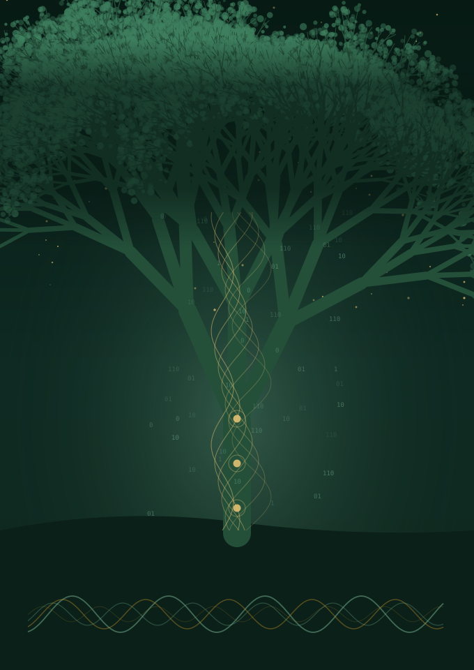
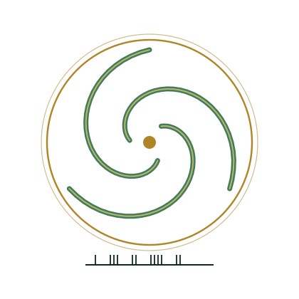
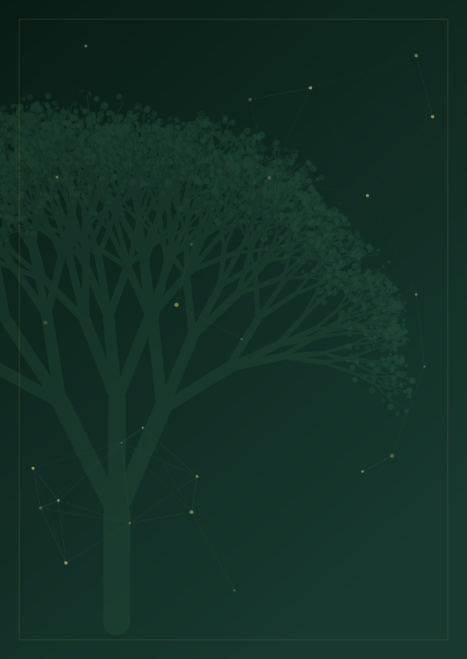
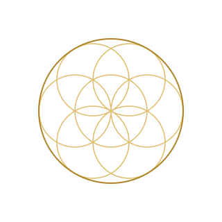
Ce livre enquête sur un objet hybride. « The Talking Tree » est à la fois une installation technique réelle, une campagne publicitaire parfaitement assumée, un geste artistique sincère, et le point de départ d'une rumeur mondiale qui, en six mois, a déformé presque tous les faits vérifiables du projet. Ces quatre plans coexistent. Les confondre est la seule erreur vraiment grave.
Tout ce qui est affirmé ici est rattaché à l'un des quatre barreaux de l'échelle épistémique exposée au chapitre 2 : une mesure, un fait établi, une hypothèse, une interprétation. Le barreau est indiqué, à chaque fois, par l'encadré qui porte l'affirmation.
Ce qui n'a pas pu être vérifié est signalé comme non vérifié — et il y en a beaucoup, car ce projet n'a publié ni code, ni données, ni spécification. Un livre honnête sur un dispositif opaque est d'abord un inventaire précis de ce qu'on ignore.
Quatre encadrés balisent le texte : 🔬 Point scientifique, 🌿 Regard énergétique, ⚠️ Limites et interprétation, ✨ Expérience intérieure. Ils vous disent en permanence sur quel terrain vous marchez.
Ce livre a été commandé à partir de la version francophone de l'histoire. L'enquête documentaire a établi que cette version comporte deux erreurs de fait, reprises partout, qu'il faut corriger avant toute autre chose.
Le nom du concepteur n'est pas « Evan Grealy ». Il s'agit d'Evan Greally, et son titre n'est pas « directeur créatif » mais Head of Creative Tech and Innovation chez Droga5 Dublin. La graphie fautive naît d'une vidéo TikTok et se propage ensuite mécaniquement.
Ce n'est pas un projet dublinois. C'est une campagne britannique, conçue pour l'ONG Purpose Disruptors sous la bannière Agency for Nature, lancée à Londres en février 2025. Dublin est la troisième escale, en avril. Le chapitre 3 retrace pas à pas comment « Londres » est devenu « Dublin ».
Ces corrections ne diminuent en rien l'intérêt du projet. Elles indiquent simplement que nous avons affaire à un objet dont la propagation médiatique est elle-même un phénomène à étudier — et qui, accessoirement, illustre exactement le mécanisme que ce livre analyse : un récit plausible se transmet mieux qu'un fait vérifié.
Il ne dénonce personne. L'équipe qui a conçu ce dispositif a fait un travail créatif soigné et n'a jamais prétendu produire de la science : elle a produit une campagne, ce qu'elle annonçait. Le problème n'est pas dans l'atelier de Droga5 ; il est dans la chaîne de reprise qui a transformé une œuvre en découverte.
Il ne tranche pas non plus la question de la sensibilité végétale. Il montre précisément où se situe la frontière de ce qui est mesuré, et laisse chacun libre de la franchir en conscience — à condition de savoir qu'on la franchit.
Enfin, il ne demande de croire à rien. Il propose des faits sourcés, des montages reproductibles, des protocoles à suivre et trois tests de contrôle qui peuvent vous détromper. C'est tout ce qu'un livre peut honnêtement offrir.
L'Arbre qui Parle — Anatomie d'un arbre connecté. Volume I de la série « L'Arbre qui Parle ». Capteurs, intelligence artificielle et interprétation consciente.
Auteur : Ateliers BN — bretagne-namaste.com
Édition numérique, 17 septembre 2026. Textes, schémas et illustrations vectorielles originales réalisés pour cette édition. Les photographies reproduites proviennent de fonds en accès libre ; leurs crédits complets figurent en annexe.
Les marques Droga5, Accenture Song, Agency for Nature, Purpose Disruptors, Happiness Brussels, Music of the Plants et PlantWave appartiennent à leurs détenteurs respectifs. Leur mention relève de l'analyse critique indépendante et du droit de citation : cet ouvrage n'est ni sponsorisé, ni affilié, ni rémunéré par aucune de ces organisations, et ne comporte aucun lien commissionné.
Les propos attribués à des personnes nommées sont des citations publiques, reproduites avec leur source. Les phrases attribuées à l'arbre sont des sorties de modèle de langage, et sont désignées comme telles partout où elles apparaissent.
Ebook librement diffusable sans aucune condition.
« L'air est vif contre mon écorce, et mes racines sont lourdes d'humidité. » Vingt-trois mots. Ils ont fait le tour du monde en six mois. Ce livre entier tient dans l'écart entre ce que cette phrase semble être et ce qu'elle est.
Une chose est certaine, et il faut la poser avant tout le reste, car elle sera longtemps la seule certitude de ce livre : cette phrase n'a pas été écrite par un arbre. Elle a été produite par un modèle de langage, à partir d'un rôle défini par un humain, sur la base de quelques nombres relevés par des capteurs. C'est un fait technique, non une opinion, et personne dans l'équipe qui l'a conçue n'a jamais prétendu le contraire.
Et pourtant. Cette phrase a ému des gens sincères. Une étudiante de Trinity College a déclaré à la télévision irlandaise qu'elle s'était sentie reconnectée à la nature. Un ancien maire d'Austin est venu s'asseoir devant un chêne vert pour l'écouter. Des millions de personnes ont partagé la vidéo. Quelque chose a eu lieu — et le réduire à « ce n'est qu'un logiciel » serait aussi faux que de prétendre qu'un arbre a parlé.
Ce livre refuse les deux paresses. Il ne dit pas « c'est de la magie ». Il ne dit pas « c'est du vent ». Il démonte l'objet, pièce par pièce, et regarde ce qu'il y a dedans.
Cet ouvrage est le premier d'une série de trois, qui abordent le même objet par trois entrées différentes.
| Volume | Question | Terrain |
|---|---|---|
| I. L'Arbre qui Parle celui-ci | Qu'est-ce qui s'est réellement passé, et qui parle ? | Enquête documentaire, analyse du dispositif, épistémologie |
| II. Biocommunication végétale et IA | Que sait-on vraiment de la signalisation végétale ? | Électrophysiologie, bioacoustique, chimie, réseaux, traduction machine |
| III. Créer un arbre parlant | Comment le refaire soi-même, honnêtement ? | Capteurs, montages, code, protocoles, déontologie arboricole |
On pourrait croire l'affaire mince : une agence de publicité a branché des capteurs sur un arbre et y a collé un modèle de langage. En quoi cela justifie-t-il plusieurs centaines de pages ?
Parce que ce petit objet est un concentré exemplaire de presque tous les problèmes que rencontre aujourd'hui quiconque travaille à l'intersection du vivant, de la mesure et de l'intelligence artificielle. On y trouve, en miniature :
Autrement dit : en démontant ce dispositif-ci, on apprend à démonter tous les autres. C'est un exercice de méthode autant qu'une enquête.
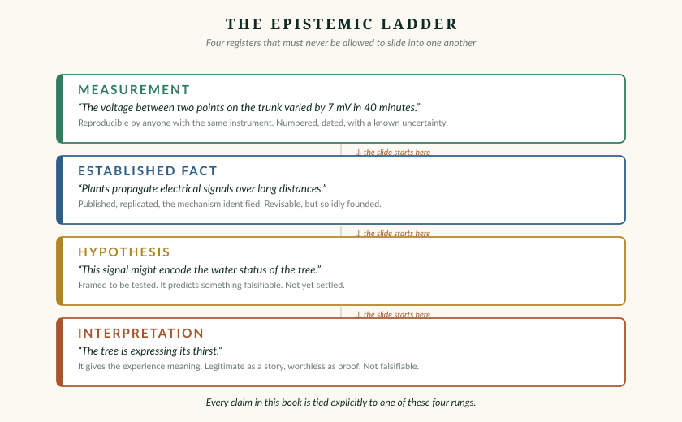
Il est écrit pour des praticiens expérimentés : hypnothérapeutes, méditants, chamanes contemporains, druides d'obédience reconstructionniste ou libre, énergéticiens, géobiologues — et, tout autant, pour des ingénieurs, des artistes numériques et des enseignants qui cherchent un cas d'étude solide.
Ces deux publics ont en commun d'être fatigués des demi-vérités. Le praticien en a assez qu'on lui serve de la pseudo-science pour valider son expérience ; l'ingénieur en a assez qu'on plaque du mystère sur ses circuits. Ce livre suppose qu'on peut tenir les deux bouts sans mentir ni d'un côté ni de l'autre — et que c'est même la seule position tenable.
Il n'y a aucune contradiction entre décrire avec précision ce que fait un pont de Wheatstone et éprouver, devant un chêne de deux cents ans, quelque chose qui n'entre dans aucun tableau de mesures. Les deux sont vrais. Ils ne sont simplement pas vrais de la même manière, et c'est ce « de la même manière » que ce livre s'attache à rendre explicite, page après page.
Ce qui est interdit, en revanche, c'est d'emprunter l'autorité de l'un pour valider l'autre. Dire « la science a prouvé que les arbres communiquent, donc mon ressenti est fondé » est un abus. Dire « ce n'est qu'un signal électrique, donc votre ressenti n'existe pas » en est un autre, symétrique et tout aussi grossier.
Les huit parties suivent une progression volontaire, de l'extérieur vers l'intérieur puis vers la pratique.
Les annexes fournissent un glossaire de plus de cent entrées, une bibliographie intégralement sourcée, un index détaillé et les crédits iconographiques complets.
Si vous le pouvez, allez voir un arbre. Un vrai, près de chez vous, que vous pourrez revoir. Posez la main sur son écorce et restez là quelques minutes sans rien attendre de particulier.
Ce livre parlera beaucoup de millivolts, de convertisseurs et de modèles de langage. Il sera plus utile si vous avez d'abord en tête un arbre précis, avec son odeur et sa rugosité — parce que la question qui traverse ces pages n'est pas « comment fabriquer un arbre qui parle », mais « qu'est-ce que je cherche, exactement, quand je veux qu'il me parle ? ».
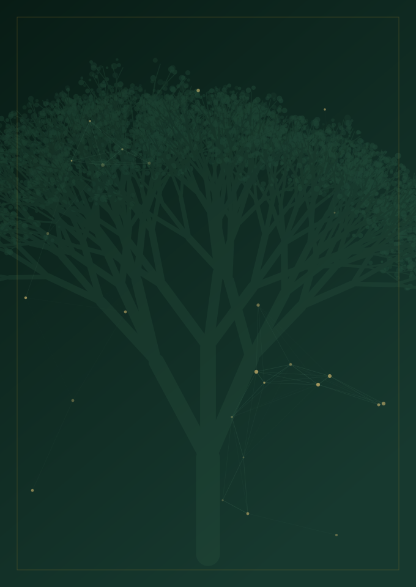
Avant d'enquêter, il faut regarder. Quelques dizaines de secondes de vidéo verticale, vues par des millions de personnes, contiennent déjà tout : le dispositif, la promesse, et l'endroit exact où le glissement se produit.
L'image est simple et bien construite. Un arbre massif dans un parc. Un banc, ou parfois un simple tabouret, posé contre le tronc. Une personne s'assoit, hésite, pose une question à voix haute. Un temps. Puis une voix répond — posée, grave, sans emphase — et elle parle à la première personne d'écorce, de racines et d'humidité. La personne sourit, ou s'émeut. Coupe.
Ce dispositif de tournage est remarquablement efficace, et il l'est pour une raison qu'il faut nommer d'emblée : il place le spectateur dans la position de témoin, jamais dans celle d'examinateur. On ne voit pas les capteurs. On ne voit pas l'ordinateur. On ne voit pas l'ingénieur qui a écrit l'invite. On voit un arbre, une personne, et une voix entre les deux.
Cet ouvrage est né de quatre liens, transmis tels quels. Il est instructif de les examiner en tant qu'objets documentaires, avant même leur contenu.
| Source | Nature | Statut documentaire |
|---|---|---|
| Reel Instagram @bloom_media.fr | Vidéo verticale ~60 s, ≈ 1 900 mentions « j'aime » | Secondaire — reprise sans source primaire citée |
| Vidéo TikTok @billionsofficiel | Vidéo verticale, légende explicative | Secondaire — introduit l'erreur de nom et de titre |
| Short YouTube chaîne Bloom Média | « Cette IA permet de parler avec les arbres 🤨 » | Secondaire — même fonds que le reel |
| Article unidivers.fr, 13 mai 2025 | Article de blog signé | Tertiaire — dérive des vidéos, comporte des erreurs de fait |
Une information qui vous parvient par quatre canaux différents ne vaut pas quatre confirmations si les quatre canaux descendent de la même source. C'est un biais classique — l'illusion de corroboration — et les réseaux sociaux le fabriquent industriellement : la même dépêche, recopiée par quinze comptes, donne au lecteur l'impression d'un consensus alors qu'il n'y a jamais eu qu'un seul témoin.
Reconstituer l'arbre généalogique d'une information est la première opération de toute enquête. Elle coûte une heure. Elle évite des années d'erreur.
Passons les images au ralenti, et séparons ce qui est montré de ce qui est suggéré.
| Ce qui est effectivement montré | Ce que le spectateur en conclut |
|---|---|
| Un arbre ancien, imposant, dans un lieu public. | Un être vénérable, chargé d'histoire, digne d'être écouté. |
| Une personne assise qui pose une question. | Un dialogue est en train d'avoir lieu. |
| Une voix synthétique répond à la première personne. | L'arbre s'exprime. |
| La réponse mentionne l'écorce, les racines, l'humidité. | Le contenu vient de l'arbre lui-même. |
| Une étudiante déclare s'être sentie reconnectée. | L'expérience est validée par son effet. |
Le point de bascule est précis. Il ne se situe pas dans la technique, qui est honnête, ni dans le montage, qui est ordinaire. Il se situe dans la grammaire : à partir du moment où la sortie du système emploie la première personne du singulier, le spectateur attribue automatiquement un énonciateur. Cette attribution n'est pas un défaut d'intelligence ; c'est un réflexe linguistique profond, que la publicité connaît depuis toujours et que la recherche en interaction homme-machine documente depuis 1966.
Ce réflexe porte un nom et une littérature. Clifford Nass et Byron Reeves l'ont formalisé sous le nom de media equation : les êtres humains appliquent aux machines, sans y penser et même en sachant que ce sont des machines, les règles sociales qu'ils appliquent aux personnes (Reeves & Nass, The Media Equation, CSLI/Cambridge University Press, 1996 ; Nass & Moon, « Machines and Mindlessness », Journal of Social Issues 56(1), 2000, p. 81-103).
Le point décisif de leurs travaux, pour notre sujet : la connaissance du mécanisme ne protège pas de l'effet. Savoir qu'un modèle de langage a écrit la phrase ne l'empêche pas d'être reçue comme une adresse. C'est pourquoi ce livre ne se contente pas d'expliquer — il propose, au chapitre 16, des tests que l'on doit réellement pratiquer, parce que comprendre ne suffit pas.
Il serait injuste de présenter cette campagne comme une tromperie. Les concepteurs n'ont jamais caché la présence de l'intelligence artificielle : elle figure dans toutes les communications du projet, et le responsable technique la revendique explicitement dans ses entretiens. Le dispositif est annoncé pour ce qu'il est — une œuvre de médiation, destinée à reconnecter de jeunes urbains à la nature.
Le prodige n'était pas de faire disparaître l'IA. Il était dans l'instant où les gens réalisaient qu'ils entendaient le point de vue d'un arbre.
Evan Greally, Droga5 Dublin, entretien LBB Online, 13 mars 2025
Cette phrase est plus subtile qu'elle n'en a l'air, et elle mérite qu'on s'y arrête. Elle ne dit pas « ils entendaient un arbre ». Elle dit « ils réalisaient qu'ils entendaient le point de vue d'un arbre ». Ce sont deux précautions de langage dans une seule phrase. Le concepteur sait exactement ce qu'il a fabriqué : un changement de perspective, un exercice d'imagination guidée par des données. C'est un objectif artistique parfaitement légitime.
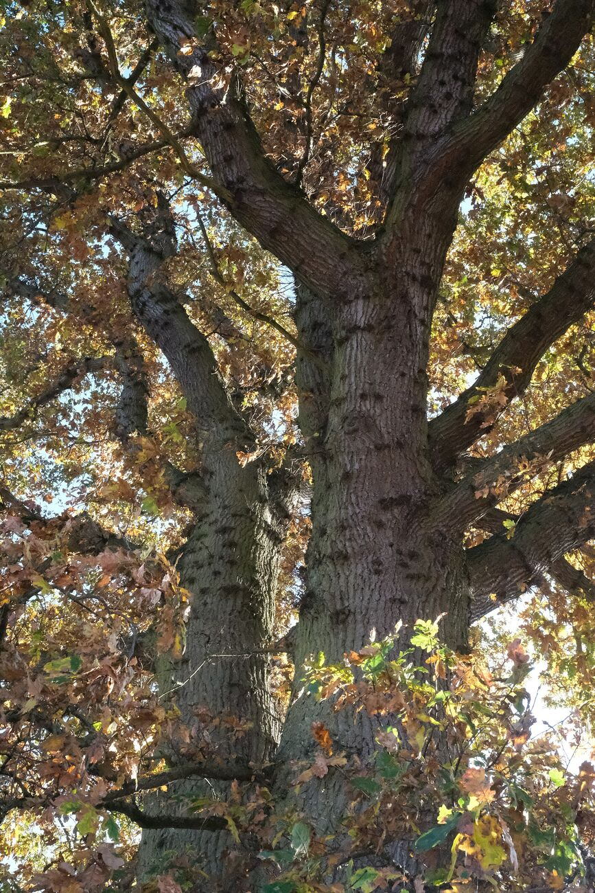
Le problème n'est donc pas à l'atelier. Il est dans la chaîne de transmission, où « point de vue » devient « voix », où « voix » devient « parole », et où « parole » devient « les scientifiques ont réussi à parler aux arbres ». Le chapitre 3 suit ce glissement maillon par maillon.
Une enquête sur sources primaires établit un tableau sensiblement différent de celui qui circule. Le projet n'est pas dublinois, l'arbre n'est pas celui qu'on croit, et le nom de son concepteur est mal orthographié partout.
Commençons par ce qui est solidement établi. « The Talking Tree » est une campagne créative britannique, réalisée pour le compte d'Agency for Nature — une structure éphémère montée par l'organisation à but non lucratif Purpose Disruptors, dont le principe affiché est que « la nature est le client ». Les agences d'exécution sont Droga5 London et Droga5 Dublin, toutes deux filiales d'Accenture Song.
L'objectif déclaré n'est pas scientifique. Il est de reconnecter de jeunes adultes urbains à la nature, en allant les chercher là où ils sont — par la culture, la musique et la technologie, selon les termes de Lisa Merrick-Lawless, cofondatrice de Purpose Disruptors.
Le dispositif n'a pas été monté une fois, mais trois, sur trois arbres différents, dans trois villes et sur trois continents de médiatisation distincts. Les sources francophones fusionnent systématiquement ces trois épisodes en un seul, ce qui explique l'essentiel des erreurs de détail.
| Ville | Date | Arbre | Contexte |
|---|---|---|---|
| Londres Morden Hall Park | Film le 14 février 2025 ; première télévisée sur ITV le 2 mars | Marronnier d'Inde, 150 ans | Lancement de la campagne ; diffusion cinéma nationale |
| Austin Hike & Bike Trail | 9-10 mars 2025 (2 jours) | Chêne vert, 50 ans | Activation pendant SXSW ; environ 100 visiteurs |
| Dublin Trinity College | Semaine du 18 avril 2025 | Platane, 200 ans | Épisode repris par la télévision irlandaise, puis par la France |
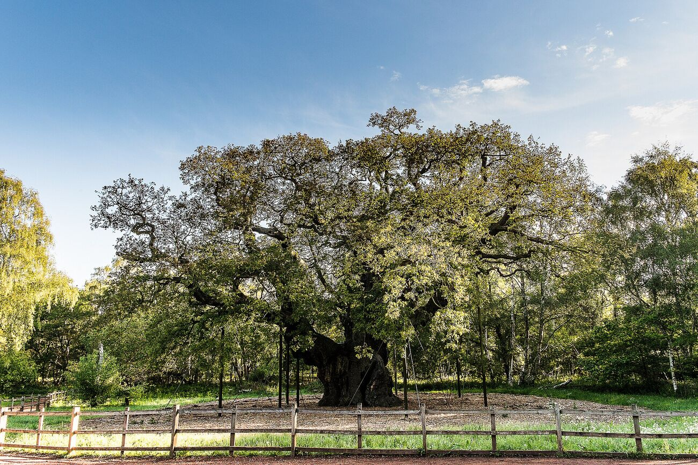
La source primaire — le reportage de RTÉ du 18 avril 2025, tourné sur place — décrit un platane (London plane) de deux cents ans sur le campus de Trinity College Dublin. C'est la version à retenir.
Les variantes « marronnier », « centenaire » ou « 150 ans » que l'on trouve dans la presse francophone et sur certains sites anglophones proviennent d'une contamination par les communiqués de la campagne londonienne, qui décrivaient effectivement un marronnier de 150 ans — à Morden Hall Park, à Londres.
Le concepteur du dispositif se nomme Evan Greally — deux « l », un « y ». Son titre est Head of Creative Tech and Innovation chez Droga5 Dublin ; la version francophone le présente comme « directeur créatif », ce qui n'est pas son poste.
Il raconte publiquement l'origine du projet, et cette origine est plus modeste et plus attachante que la campagne finale :
Tout a commencé avec un plant de menthe appelé Eight. J'avais cette idée : et si une plante pouvait parler ?
Evan Greally, entretien LBB Online
Le prototype était donc un plant de menthe domestique, câblé pour transmettre ses signaux bioélectriques à un modèle. Entre ce pot de menthe et un platane bicentenaire sur le campus de Trinity College, la différence est d'échelle et de mise en scène — pas de nature. C'est une information précieuse pour le praticien : le dispositif que ce livre vous apprendra à construire au volume III est, dans son principe, celui-là même qui a produit l'installation mondiale.
Greally formule par ailleurs une remarque techniquement significative, sur laquelle nous reviendrons longuement au chapitre 13 :
Comme l'arbre met à jour sa propre personnalité et son humeur, ses réponses ne sont pas toujours prévisibles.
Evan Greally, entretien LBB Online
Cette phrase est vraie et trompeuse à la fois. Vraie : un modèle de langage génératif produit effectivement des sorties non déterministes. Trompeuse : cette imprévisibilité est une propriété du modèle, pas de l'arbre. Un générateur pseudo-aléatoire est lui aussi « imprévisible », et personne n'en conclut qu'il a une humeur. Nous y reviendrons.
Trois sorties textuelles sont documentées par des sources primaires ou quasi primaires. Il faut les lire pour ce qu'elles sont : des productions de modèle de langage, non des mesures.
« L'air est vif contre mon écorce, et mes racines sont lourdes d'humidité. » (Dublin, RTÉ)
« Il y a des années, je partageais le sol avec beaucoup d'autres racines d'arbres, tant de signaux dans la terre — et maintenant il y en a moins. Le silence sous moi s'est accru. » (Dublin, RTÉ)
« Votre attention me réchauffe. Des températures plus stables et une humidité plus régulière m'aideraient. » (Austin, réponse à l'ancien maire Steve Adler, SHOOTonline)
Examinons la deuxième, qui est la plus intéressante. Elle évoque une perte de voisinage racinaire et un « silence » souterrain accru. C'est une image forte, écologiquement pertinente — et elle ne peut venir d'aucun capteur. Aucun instrument de la liste publiée ne mesure la densité racinaire du voisinage, et encore moins son évolution sur plusieurs décennies. Cette phrase provient entièrement du modèle de langage, nourri par un rôle et par la culture écologique générale qu'il a absorbée à l'entraînement.
Cette observation n'accuse personne de mensonge. Elle illustre un phénomène structurel que nous quantifierons au chapitre 13 : dans une sortie de ce type, la part du texte qui est traçable jusqu'à une mesure est minoritaire, et la part qui vient de la culture du modèle est majoritaire. Ce n'est pas un défaut de réglage ; c'est le fonctionnement normal d'un modèle de langage employé de cette façon.
Le seul remède est de contraindre l'invite pour interdire tout énoncé non adossé à un nombre — technique détaillée au chapitre 24 et illustrée figure 4.4.
Un livre honnête sur un dispositif fermé doit consacrer autant de place à ses lacunes qu'à ses trouvailles. Voici, sans atténuation, ce que l'enquête documentaire n'a pas permis d'établir.
| Question | État |
|---|---|
| Quel modèle de langage exactement (famille, taille, quantification) ? | Inconnu. Annoncé « open source », jamais nommé. |
| Quels modèles de reconnaissance et de synthèse vocale ? | Inconnu. |
| Fabricants, modèles et références des capteurs ? | Inconnus. Aucune fiche technique publiée. |
| Quelle est la liste canonique des capteurs ? | Trois listes divergentes publiées, jamais réconciliées (voir chapitre 5). |
| Comment sont mesurés les « signaux bioélectriques » ? | Inconnu. Ni électrodes, ni emplacement, ni protocole. |
| Le prompt système, le réglage fin, la base de connaissances ? | Inconnus. |
| Emplacement précis sur le campus, dates de début et de fin ? | Inconnus. Seulement « la semaine du 18 avril ». |
| Budget de l'opération ? | Inconnu. |
| Partenariat de recherche formel avec Trinity College ? | Non établi. Aucun chercheur, département ou publication identifiés. |
| Les données collectées ont-elles été conservées ou publiées ? | Aucune trace. |
| Dépôt de code, API, jeu de données ouvert ? | Aucun. Recherches ciblées infructueuses. |
| Site officiel du projet ? | Perdu. Le domaine sert aujourd'hui du contenu publicitaire sans rapport. |
Cette histoire offre un cas d'école rare : la chaîne complète de propagation est reconstituable, maillon par maillon, et l'on peut dater précisément l'apparition de chaque erreur.
Les rumeurs sont d'ordinaire impossibles à tracer. Celle-ci fait exception, parce que chaque maillon a laissé une trace horodatée et publique. Nous pouvons donc faire ce que les études sur la désinformation font rarement : montrer où chaque déformation est née, et pourquoi elle a survécu.
┌──────────────────────────────────────────────────────────────────────┐
│ RTÉ News — 18 avril 2025 — reportage tourné sur place │
│ « Project gives 200-year-old Dublin tree a voice » │
│ Faits : platane · 200 ans · Trinity College · Evan Greally │
└──────────────────────────────┬───────────────────────────────────────┘
│ reprise fidèle
▼
┌──────────────────────────────────────────────────────────────────────┐
│ TikTok @bloom_media — mai 2025 — crédite explicitement « RTE NEWS » │
│ Perte : le contexte de campagne publicitaire disparaît │
└──────────────────────────────┬───────────────────────────────────────┘
│ recopie sans source
▼
┌──────────────────────────────────────────────────────────────────────┐
│ TikTok @billionsofficiel — juillet 2025 │
│ ✗ AJOUT D'ERREUR : « Evan Grealy, directeur créatif chez Droga5 » │
│ → nom mal orthographié + titre inventé │
└──────────────────────────────┬───────────────────────────────────────┘
│
┌──────────────────┴───────────────────┐
▼ ▼
┌───────────────────────────┐ ┌────────────────────────────────┐
│ Instagram / YouTube │ │ Blogs francophones │
│ Bloom Média — automne 2025 │ │ unidivers.fr · lebigdata.fr │
│ ✗ « à Dublin, un arbre │ │ ✗ AJOUT : « marronnier » │
│ bicentenaire » │ │ ✗ AJOUT : « 150 ans » │
│ → l'origine londonienne │ │ ✗ AJOUT : citations anonymes │
│ est définitivement │ │ introuvables ailleurs │
│ effacée │ │ ✗ AJOUT : interface web │
└───────────────────────────┘ │ d'« humeur » non corroborée │
└────────────────────────────────┘
Chaque maillon CONSERVE ce qui frappe et PERD ce qui nuance.
Aucun maillon n'invente de toutes pièces : chacun ajoute une petite erreur
plausible. C'est la somme qui produit une histoire fausse.
Quatre erreurs distinctes se sont installées. Chacune obéit à une logique repérable, et c'est cette logique qui nous intéresse ici — parce qu'elle se reproduira sur d'autres sujets.
Mécanisme : la source primaire est déjà partielle. Le reportage de RTÉ est irlandais ; il couvre légitimement l'escale irlandaise, et n'a aucune raison de détailler l'historique londonien. Les reprises héritent de ce cadrage sans savoir qu'il en est un. Personne n'a menti : le cadre régional de la source est devenu le cadre absolu de l'histoire.
Mécanisme : fusion de dossiers de presse. Les rédactions francophones ont eu accès aux communiqués de la campagne londonienne et au reportage dublinois. Ne sachant pas qu'il s'agissait de deux arbres, elles ont combiné les caractéristiques. C'est l'erreur la plus fréquente en documentation : on suppose l'unicité de l'objet.
Mécanisme : transcription auditive et simplification de titre. Le nom a probablement été transcrit à l'oreille depuis le reportage, ce qui explique la perte d'un « l ». Quant au titre, Head of Creative Tech and Innovation n'a pas d'équivalent français immédiat ; « directeur créatif » est une approximation commode, et fausse. Une fois écrite dans une légende TikTok, elle devient la source de toutes les suivantes.
Mécanisme : comblement des trous. Certains blogs décrivent un haut-parleur dissimulé à la base du tronc, une interface web affichant l'historique d'« humeur » et de « stress » de l'arbre, ou citent des intervenants anonymes (« l'un des coordinateurs », « un chercheur en droit de l'environnement ») dont les propos sont introuvables ailleurs. Ces éléments sont plausibles — c'est précisément ce qui les rend dangereux. Un détail plausible, non sourcé, ajouté pour rendre un article plus vivant, devient indiscernable d'un fait dès la copie suivante.
Observez la régularité : à chaque maillon, ce qui est frappant se conserve, ce qui est nuancé se perd. « Un arbre parle » se transmet ; « une agence de publicité a monté une installation où un modèle de langage verbalise des relevés de capteurs » ne se transmet pas — c'est trop long, trop plat, et cela n'appelle pas le partage.
Ce n'est pas une critique des journalistes ou du public. C'est une propriété structurelle de tout canal à bande passante limitée et à sélection par l'attention. Et elle a une conséquence directe pour le praticien : si vous construisez un dispositif de ce type, vous devez supposer que toute nuance que vous ne rendez pas techniquement inséparable du résultat sera perdue en moins de trois copies. On ne protège pas une nuance par un avertissement en bas de page ; on la protège en la rendant structurelle.
Il y a une ironie que ce livre ne peut pas laisser passer. Le mécanisme qui a transformé « campagne londonienne » en « arbre dublinois qui parle » est exactement le même que celui qui transforme des relevés de capteurs en confidences d'arbre.
Dans les deux cas : un contenu maigre et exact est reçu par un système qui a une forte tendance à produire du plausible, et ce système comble les blancs avec ce qui se transmet bien. Dans un cas le système est un modèle de langage ; dans l'autre, c'est une chaîne humaine de reprise. Les deux hallucinent selon la même économie : minimiser la surprise, maximiser la fluidité.
Cette symétrie n'est pas une coquetterie rhétorique. Elle a une valeur diagnostique : chaque fois que vous rencontrerez une affirmation dans ce domaine, posez-vous la question dans les deux sens — par quelle chaîne cette information m'est-elle parvenue, et qu'a perdu chaque maillon ?
Quinze ans avant Dublin, un arbre bruxellois publiait déjà son état sur les réseaux sociaux. Comparer les deux dispositifs est l'exercice le plus instructif de ce livre — parce que l'ancien était, sur un point décisif, plus honnête.
La campagne de 2025 a été présentée comme « le premier arbre parlant au monde ». Cette revendication est publicitaire, et factuellement contestable : en septembre 2010, l'agence Happiness Brussels avait équipé un arbre centenaire de Bruxelles pour le compte de Cascade, éditeur du magazine scientifique EOS, dans le cadre de son « Low Impact Month ». Le projet s'appelait déjà, mot pour mot, « Talking Tree ». Il a reçu un Wood Pencil aux D&AD Awards 2011 en catégorie Digital Brand Expression.
| Élément | Mise en œuvre de 2010 |
|---|---|
| Capteurs | Mesureur d'ozone, mesureur de particules fines, luxmètre, station météo complète, webcam, microphone |
| Traitement | Logiciel sur mesure, à base de règles : un seuil franchi déclenche un message |
| Canaux de sortie | Texte sur Facebook et Twitter ; vidéos sur YouTube ; photographies sur Flickr ; enregistrements sonores sur SoundCloud ; site dédié |
| Interaction | Aucune. Publication différée, à sens unique |
| Motivation affichée | Rendre visible la souffrance des arbres urbains exposés à la pollution |
Beaucoup d'arbres, dans les grandes villes, vivent difficilement à cause de la pollution. Mais quand vous passez à côté d'un arbre malade, vous ne voyez pas toujours qu'il y a quelque chose qui ne va pas.
Ramin Afshar, Happiness Brussels, 2010
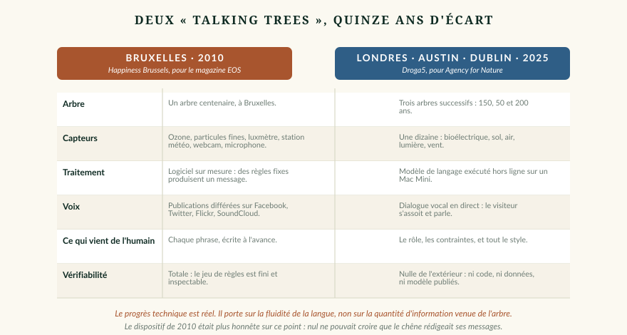
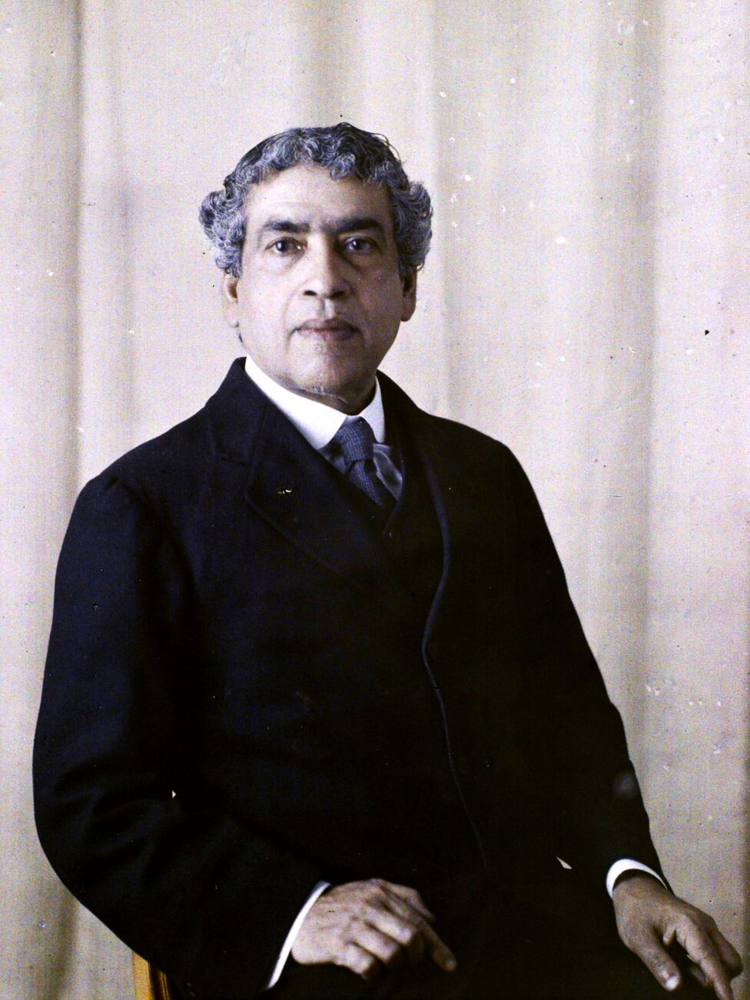
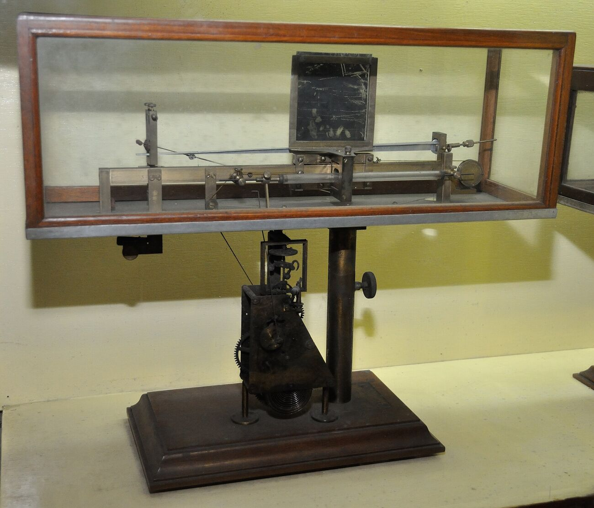
Le dispositif de 2010 était techniquement inférieur sur tous les plans qui impressionnent : pas de dialogue, pas de voix, pas de génération de texte, des messages plats et répétitifs. Et pourtant, sur le seul critère qui compte pour ce livre — peut-on savoir d'où vient chaque mot ? — il était supérieur.
Un système à base de règles est intégralement inspectable. Le jeu de règles est fini ; on peut le lire, l'énumérer, le tester exhaustivement. Pour chaque message publié, il existe une règle unique qui l'a déclenché, et une valeur de capteur qui a franchi un seuil. La fonction de transfert est connue.
Un modèle de langage génératif ne possède aucune de ces propriétés. La même entrée peut produire des sorties différentes ; la sortie contient des éléments qui ne figurent nulle part dans l'entrée ; et il n'existe pas de procédure qui, à partir d'une phrase produite, permette de reconstituer ce qui l'a causée.
Ce critère n'est pas une exigence de puriste. C'est la définition même de la sonification au sens de la communauté scientifique du domaine : Thomas Hermann (ICAD 2008) exige que la transformation soit « systématique, objective et reproductible ». Le dispositif de 2010 satisfait ces trois conditions. Celui de 2025, non — ce qui n'en fait pas une fraude, mais en fait autre chose qu'un affichage de données.
Il y a plus. Personne, en 2010, ne pouvait croire que le chêne rédigeait lui-même ses messages : ils étaient trop évidemment gabarités, trop répétitifs, trop mécaniques. La médiocrité littéraire du système était en elle-même un avertissement, permanent et gratuit. En 2025, la qualité d'écriture du modèle de langage supprime cet avertissement — et rien ne le remplace.
Voici l'énoncé central de ce livre, que nous démontrerons quantitativement au chapitre 13 : plus la sortie d'un système est fluide, moins l'utilisateur peut estimer la part qui vient réellement de la mesure.
La fluidité n'ajoute aucune information. Elle supprime les indices qui permettaient d'en évaluer la quantité. C'est pourquoi un dispositif honnête doit réintroduire volontairement des marques de sa propre mécanique — chiffres bruts affichés, mentions d'incertitude, silences quand les données manquent. Le chapitre 24 en fait une règle de conception.
Les deux « Talking Trees » ne sont pas isolés. Ils s'inscrivent dans une histoire longue, qui commence avec les premiers enregistrements électriques sur le vivant végétal et traverse tout le vingtième siècle. La frise ci-dessous en donne les jalons vérifiés ; la partie VIII y reviendra en détail.
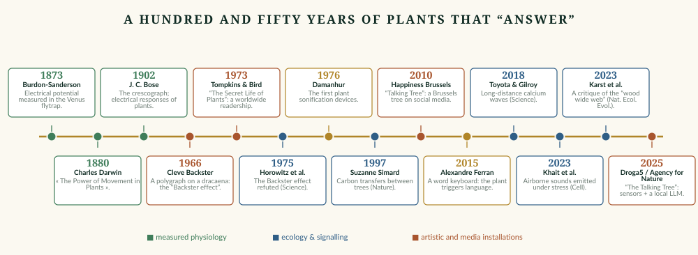
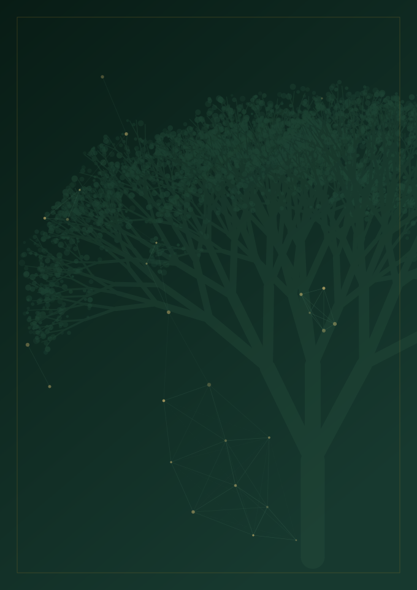
Le projet annonce « dix capteurs ». Trois listes différentes ont été publiées, et elles ne coïncident pas. Aucune référence de matériel n'a jamais été communiquée. Voici ce que l'on peut malgré tout établir.
Commençons par la seule chose stable : le nombre. Toutes les sources anglophones parlent de « dix capteurs » ou « plus de dix capteurs ». C'est un ordre de grandeur crédible pour une installation temporaire, et il correspond à ce qu'on peut raisonnablement alimenter et lire sur un nœud unique.
Au-delà, les choses se compliquent. Les communiqués de la campagne londonienne, le reportage irlandais et la couverture de l'activation texane donnent trois listes qui se recoupent partiellement sans jamais coïncider.
| Grandeur | Liste A Londres | Liste B Dublin, RTÉ | Liste C Austin |
|---|---|---|---|
| Signaux bioélectriques | ✓ | ✓ | ✓ |
| Humidité du sol | ✓ | ✓ | ✓ |
| Température de l'air | ✓ | ✓ | ✓ |
| Humidité de l'air | ✓ | ✓ | ✓ |
| Vitesse du vent | ✓ | — | ✓ |
| pH du sol | — | ✓ | — |
| Ensoleillement / lumière | — | ✓ | — |
| Qualité de l'air | — | ✓ | — |
| Heure du jour | — | ✓ | — |
Le dendromètre (mesure du gonflement du tronc), le capteur de flux de sève et un capteur de CO₂ spécifique sont fréquemment cités dans les commentaires et reprises du projet. Aucune source ne les mentionne. Seule « qualité de l'air » figure dans la liste de RTÉ, sans précision de polluant.
Nous les traitons dans ce livre parce qu'ils sont techniquement pertinents pour un arbre instrumenté — et c'est précisément pourquoi il faut dire clairement qu'ils ne font pas partie du dossier factuel de ce projet-ci.
C'est le capteur le plus intéressant, et celui sur lequel on en sait le moins. Toutes les listes le mentionnent ; aucune ne dit comment il est mis en œuvre. Nous ne savons ni le type d'électrode, ni son emplacement, ni sa profondeur, ni s'il existe une électrode de référence, ni la bande passante retenue, ni le gain, ni la résolution du convertisseur.
Cette lacune n'est pas anodine : de tous les capteurs de la liste, c'est le seul dont la mise en œuvre est véritablement difficile. Mesurer une température ou une humidité est une opération résolue depuis des décennies ; mesurer un potentiel bioélectrique sur un arbre sur pied, en extérieur, sans cage de Faraday, est un problème ouvert dont la littérature scientifique montre l'ampleur.
Hao, Li & Hao (2021), Journal of Experimental Botany 72(4), p. 1321-1335, mesurent le potentiel électrique du xylème sur Populus hopeiensis. Protocole précis : électrodes d'acier inoxydable de 30 mm de long et 4 mm de diamètre, insérées à 50 cm de hauteur, pénétrant de 5 mm dans le xylème, avec une électrode de masse enterrée entre 20 et 80 cm.
Amplitudes relevées : plusieurs centaines de millivolts en saison de végétation, atteignant parfois 1 V ; seulement quelques dizaines de millivolts en fin d'automne et en hiver. Rythmicité journalière et annuelle nettes.
Le point crucial est leur interprétation : les auteurs attribuent ces variations au nombre d'ions accumulés à la surface de l'électrode en fonction de la disponibilité en eau du xylème — c'est-à-dire à l'interface de mesure autant qu'au tissu mesuré.
Gibert, Le Mouël, Lambs, Nicollin & Perrier (2006), Plant Science 171(5), p. 572-584, mesurent sur Populus nigra avec des tiges d'acier inoxydable référencées à une électrode impolarisable Pb/PbCl₂. Ils observent de nettes variations journalières en été — qui disparaissent après la chute des feuilles.
C'est un résultat de contrôle remarquable, et une leçon pour tout praticien : si le « signal » de votre arbre s'évanouit quand l'arbre cesse de transpirer, vous ne mesuriez probablement pas de la signalisation, mais un potentiel d'écoulement — un phénomène électrocinétique produit par le mouvement de la sève à travers une matrice chargée. C'est réel, mesurable, physiologiquement informatif. Ce n'est pas un message.
Puisque rien n'est publié, nous ne pouvons pas décrire le dispositif réel. Nous pouvons en revanche décrire une implémentation plausible — c'est-à-dire ce qu'un ingénieur compétent, disposant d'un budget de campagne et de quelques semaines, monterait aujourd'hui. Cette reconstitution sert de squelette au volume III.
Le tableau ci-dessous relève entièrement de l'hypothèse d'ingénierie, troisième barreau de l'échelle épistémique. Il ne décrit pas le dispositif de Droga5, dont nous ne savons rien. Il décrit ce qui serait techniquement raisonnable. Aucune ligne ne doit être citée comme une caractéristique du projet réel.
| Grandeur | Principe | Famille de composants | Difficulté |
|---|---|---|---|
| T° et humidité de l'air | Capacitif + résistance de platine | Capteur numérique I²C de qualité métrologique, sous abri ventilé | Faible |
| Pression atmosphérique | Membrane piézorésistive | Capteur barométrique I²C intégré | Faible |
| Humidité du sol | Capacitif — jamais résistif | Sonde capacitive enrobée, ou TDR pour la précision | Moyenne (étalonnage par type de sol) |
| Température du sol | Thermistance numérique 1-Wire | Sonde étanche à deux profondeurs | Faible |
| pH du sol | Électrode de verre | Sonde pH industrielle + amplificateur haute impédance | Élevée (dérive, étalonnage fréquent) |
| Lumière | Photodiode avec filtre spectral | Luxmètre I²C, ou capteur quantique PAR si l'on veut du µmol·m⁻²·s⁻¹ | Faible à moyenne |
| Qualité de l'air | NDIR pour le CO₂, diffusion laser pour les particules | Modules capteurs environnementaux à sortie numérique | Moyenne |
| Vent | Coupelles ou ultrasons | Anémomètre à impulsions ou à sortie série | Faible |
| Bioélectrique | Potentiométrie différentielle haute impédance | Électrodes impolarisables → amplificateur d'instrumentation → convertisseur 16-24 bits | Très élevée (voir chapitre 11) |
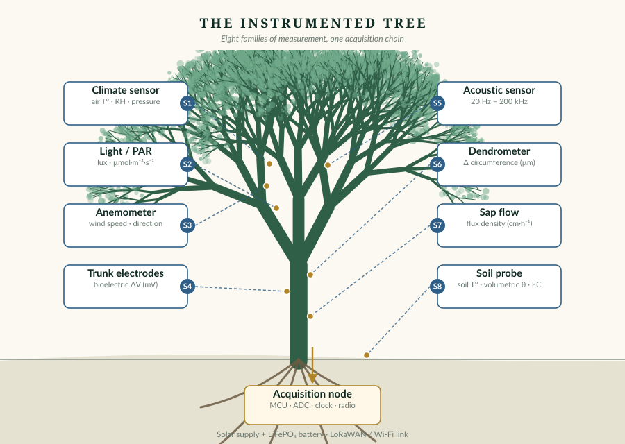
Un Mac Mini, une batterie, aucun serveur distant : ce choix technique, apparemment anecdotique, est le plus intéressant du projet — et le plus reproductible.
Sur l'architecture, nous disposons d'un peu plus que sur les capteurs, parce que le concepteur en a parlé en entretien. Trois éléments sont documentés par des sources concordantes, et ils suffisent à dessiner une structure.
| Élément documenté | Source | Confiance |
|---|---|---|
| Un modèle de langage convertit les données de capteurs en langage humain | RTÉ, Marketing Beat, LBB | Haute |
| Le modèle est exécuté localement, hors ligne, sans serveur distant | LBB, Muse by Clios | Haute |
| Le matériel est un Mac Mini M4, alimenté par batterie | LBB, repris par Telangana Today | Moyenne-haute |
| Chaîne complète : reconnaissance vocale → modèle → synthèse vocale | LBB, RTÉ | Haute |
| Le modèle est « open source » | LBB | Moyenne — jamais nommé |
Dans le contexte de 2025, brancher une installation sur une interface distante de fournisseur aurait été infiniment plus simple. Le choix de faire tourner le modèle sur place, sur une machine de bureau alimentée par batterie, mérite qu'on s'y arrête, parce qu'il a quatre conséquences que tout praticien devrait connaître.
Ce choix d'architecture est intégralement reproductible avec des logiciels libres, et c'est le seul aspect du projet dont on puisse dire cela. Un modèle de langage de taille moyenne, un moteur de reconnaissance vocale et un moteur de synthèse vocale tournent aujourd'hui, en local, sur une machine à quelques centaines d'euros. Le volume III en détaille le montage complet.
Autrement dit : la partie du dispositif qui semblait la plus inaccessible — « l'IA » — est la plus facile à refaire. Ce sont les capteurs, et surtout le capteur bioélectrique, qui posent les vrais problèmes.
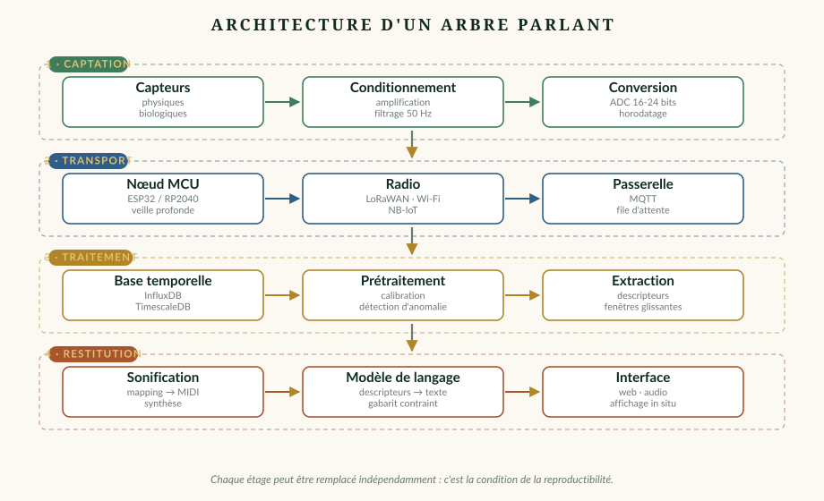
Reconstituons le cycle complet, de la question posée par un visiteur à la réponse entendue. Les durées indiquées sont des ordres de grandeur typiques pour une chaîne locale de 2025 ; elles relèvent de l'estimation d'ingénierie.
t = 0 s Le visiteur parle.
→ microphone directionnel, détection d'activité vocale
t ≈ 0,3 s Fin de parole détectée (silence > 300 ms)
t ≈ 0,3 s RECONNAISSANCE VOCALE (locale)
audio → texte ~0,4 s
t ≈ 0,7 s CONSTRUCTION DE L'INVITE
rôle + contraintes + question + DERNIERS RELEVÉS
↑ c'est ici, et seulement ici, que l'arbre entre
dans la boucle : une poignée de nombres,
insérés dans un gabarit de texte < 0,01 s
t ≈ 0,7 s INFÉRENCE DU MODÈLE DE LANGAGE (locale)
invite → réponse, ~60 jetons ~0,8 s
t ≈ 1,5 s SYNTHÈSE VOCALE (locale)
texte → audio ~0,3 s
t ≈ 1,8 s Le haut-parleur restitue la réponse.
──────────────────────────────────────────────────────────────
Temps total de boucle : ≈ 1,8 s — sous le seuil qui romprait
le sentiment de conversation.
Part du cycle où les données de l'arbre interviennent :
une insertion de texte de moins de 10 millisecondes.
La durée d'une opération ne mesure pas son importance. Un seul nombre inséré au bon endroit peut déterminer entièrement le sens d'une phrase — et c'est précisément ce qu'une invite bien contrainte cherche à obtenir.
Le schéma n'est donc pas un argument contre le dispositif. Il indique simplement où regarder : la question « qu'est-ce qui vient de l'arbre ? » se joue entièrement dans la construction de l'invite, pas dans la puissance du modèle. C'est l'objet du chapitre 13.
Trois modèles en série, dont un seul écrit. Comprendre leur répartition des rôles, c'est comprendre où naît exactement la personnalité de l'arbre.
« L'IA » est un mot valise qui désigne ici trois systèmes distincts, entraînés séparément, aux fonctions très différentes. Les confondre empêche de raisonner. Séparons-les.
| Étage | Fonction | Ce qu'il apporte | Ce qu'il n'invente pas |
|---|---|---|---|
| Reconnaissance vocale | Audio du visiteur → texte | Transcription, ponctuation, détection de langue | Rien du contenu : il transcrit |
| Modèle de langage | Invite → réponse textuelle | Syntaxe, ton, images, longueur, sentiment exprimé | Les nombres qu'on lui a donnés |
| Synthèse vocale | Texte → audio | Timbre, prosodie, débit, « âge » perçu de la voix | Rien du contenu : il prononce |
On attribue spontanément tout l'effet au modèle de langage. C'est une erreur d'appréciation. Le choix du timbre de la synthèse vocale fait au moins autant de travail que le texte, et il est intégralement décidé par un humain.
Une même phrase — « l'air est vif contre mon écorce » — produit des effets radicalement différents selon qu'elle est prononcée par une voix grave et lente, une voix d'enfant, une voix synthétique métallique ou une voix féminine douce. Le choix retenu pour ce type d'installation est presque toujours le même : grave, lent, légèrement rauque, avec des pauses longues. Ce n'est pas un hasard acoustique, c'est une construction de personnage : c'est la voix culturellement codée de l'ancien, du sage, du témoin du temps long.
Aucune propriété physique de l'arbre ne détermine sa voix. Un platane n'a pas de cordes vocales, pas de fréquence fondamentale, pas de registre. Le timbre est un choix de mise en scène, au même titre que la musique d'un film.
Il faut le dire d'autant plus nettement que ce choix est très efficace : dans les expériences d'attribution, la voix pèse souvent plus lourd que le contenu sur le sentiment de s'adresser à quelqu'un. Un praticien qui construit ce type de dispositif doit savoir qu'en choisissant une voix, il fabrique déjà les trois quarts du personnage — avant même d'avoir écrit une ligne.
Si la voix fait le personnage, l'invite fait le caractère. C'est le texte, écrit par un humain, qui précède les données et instruit le modèle sur ce qu'il doit être et comment il doit répondre. C'est la pièce maîtresse du dispositif, et c'est aussi celle qui n'a jamais été publiée.
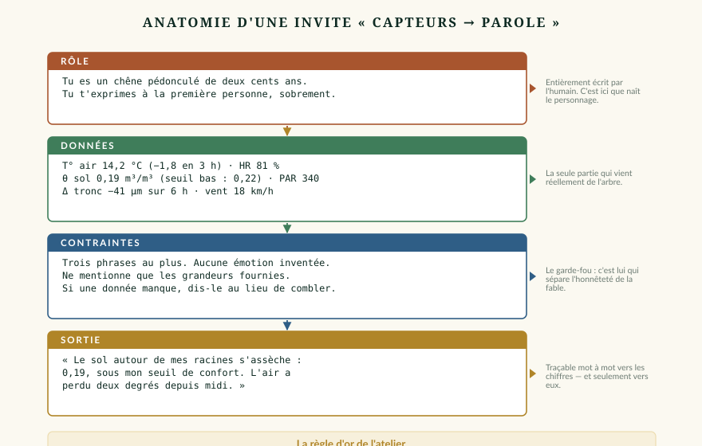
La déclaration de Greally selon laquelle « l'arbre met à jour sa propre personnalité et son humeur » suggère un mécanisme d'état persistant : la sortie d'une session influencerait l'invite de la suivante. C'est techniquement banal — on stocke un résumé, on le réinjecte — et cela produit effectivement une dérive au fil du temps. Mais cette dérive est une propriété de la boucle de rétroaction logicielle, pas un état interne de l'arbre.
La technique dominante pour faire « commenter » des séries temporelles par un modèle de langage consiste simplement à insérer les valeurs sous forme de texte dans l'invite. Cette littérature existe et elle est instructive : Nepal et al. (2024) pour la narration de données de capteurs (AWARE Narrator, arXiv:2411.04691), ainsi que plusieurs travaux d'alignement modèle-capteurs (SensorLLM, arXiv:2410.10624).
Le constat récurrent de ce corpus est sévère : la méthode fonctionne mal au-delà de quelques centaines de pas de temps, et les sorties sont fréquemment génériques, inexactes ou mal ancrées dans les données. Autrement dit, le modèle produit un texte plausible dont le lien effectif aux nombres fournis est faible et difficile à contrôler.
Le résultat le plus dur vient de Tan, Merrill, Gupta, Althoff & Hartvigsen (2024), Are Language Models Actually Useful for Time Series Forecasting?, NeurIPS 2024 (arXiv:2406.16964) : sur trois méthodes populaires de prévision de séries temporelles par modèle de langage, retirer le modèle ou le remplacer par une simple couche d'attention ne dégrade pas les performances — et souvent les améliore. Un modèle trivial bat la plupart des architectures à base de modèle de langage. Nous exploiterons ce résultat au chapitre 16 pour construire un test de contrôle.
Un projet fermé n'est pas un projet malhonnête. Mais il ne peut prétendre à aucune des vertus qu'on lui attribue : ni vérifiabilité, ni reproductibilité, ni valeur scientifique. Il faut savoir ce qu'on perd.
Récapitulons sans détour. Le projet n'a publié aucun des éléments suivants : code source, spécification matérielle, référence de capteur, invite système, nom du modèle, protocole d'étalonnage, jeu de données, méthode d'analyse, résultat. Le site officiel lui-même a été perdu : le nom de domaine a expiré et sert désormais du contenu publicitaire sans rapport, tandis que la page de l'agence renvoie une erreur.
Une campagne de communication n'a aucune obligation de publier son code. Ce n'est pas un manquement : c'est le fonctionnement normal d'une agence, qui protège son savoir-faire et n'a jamais annoncé de démarche scientifique.
Le problème apparaît uniquement lorsque le projet est reçu comme une contribution à la connaissance — ce qui s'est produit massivement. À ce moment-là, l'absence de publication cesse d'être neutre : elle rend impossible toute évaluation.
Certaines couvertures du projet évoquent une visée scientifique : corréler le stress environnemental à l'activité bioélectrique de l'arbre, en lien avec Trinity College Dublin. C'est une ambition parfaitement légitime — et l'enquête n'a trouvé aucune trace de sa réalisation.
Aucun chercheur n'est nommé. Aucun département n'est identifié. Aucun protocole n'est décrit. Aucune publication, aucune préimpression, aucun jeu de données déposé n'existe. La formule « le projet a été apporté à Trinity College » décrit un lieu d'installation, non un partenariat de recherche.
Le formulation exacte est : le caractère scientifique du volet dublinois n'est pas établi. Ce n'est pas la même chose que « il n'y a pas eu de science ». Il est possible qu'un travail ait eu lieu sans être publié. Mais en l'absence de toute trace, la seule position tenable est de ne rien affirmer — ni dans un sens, ni dans l'autre.
Cette prudence n'est pas de la pusillanimité : c'est l'application directe de la règle posée au chapitre 2. Une affirmation sans support ne vaut pas mieux qu'une affirmation contraire sans support.
Énumérons ce qui devient impossible dès lors que rien n'est publié. Cette liste n'est pas abstraite : chaque ligne est une opération qu'un praticien voudrait légitimement pouvoir faire.
| Opération impossible | Ce qu'il aurait fallu publier |
|---|---|
| Refaire l'expérience à l'identique | Références de capteurs, schéma de câblage, code du nœud |
| Vérifier qu'une phrase correspond bien aux données de l'instant | Journal horodaté des relevés et des sorties |
| Évaluer la part du signal dans la sortie | Invite système et nom du modèle |
| Contrôler l'absence d'artefact | Protocole d'étalonnage et mesures de contrôle |
| Réanalyser les données autrement | Jeu de données brut |
| Construire dessus | Une licence et un dépôt |
| Comparer à un autre dispositif | Une spécification quelconque |
Cette opacité détermine la suite de l'ouvrage. Puisque nous ne pouvons pas analyser ce dispositif-là, nous allons faire mieux : analyser la classe de dispositifs à laquelle il appartient, à partir de la littérature scientifique publique, et construire une version entièrement ouverte que le lecteur pourra monter, vérifier et contredire.
C'est le programme des parties III à VII, et de l'intégralité du volume III. Là où le projet original s'arrête, ce livre commence.
Un arbre n'est pas muet. Il produit en permanence des signaux électriques, hydrauliques, acoustiques et chimiques, tous mesurables et tous documentés. La question n'est pas s'il y a quelque chose à écouter — il y en a beaucoup — mais ce que cela veut dire.
Il serait absurde de conclure des chapitres précédents que « rien ne se passe ». C'est le contraire : la physiologie d'un arbre est électriquement, hydrauliquement et acoustiquement très active, et cette activité est reproductiblement mesurable. Ce chapitre expose ce socle, avec ses chiffres et ses sources, parce qu'on ne peut juger de ce qui est ajouté qu'en sachant ce qui est là.
La littérature distingue trois familles, qu'il est capital de ne pas confondre : elles n'ont ni la même cause, ni la même durée, ni le même sens biologique. La taxonomie de référence est celle de Mudrilov, Ladeynova, Grinberg, Balalaeva & Vodeneev (2021), International Journal of Molecular Sciences 22(19):10715.
| Potentiel d'action (AP) | Potentiel de variation (VP) | Potentiel systémique (SP) | |
|---|---|---|---|
| Amplitude | Dizaines à une centaine de mV | Plusieurs dizaines de mV | Faible, peu documentée |
| Durée | Quelques secondes à quelques dizaines de secondes | Jusqu'à plusieurs dizaines de minutes | Longue |
| Loi du tout ou rien | Oui, avec seuil et période réfractaire | Non — amplitude proportionnelle au stimulus | Non |
| Propagation | Auto-propagé, 1 à 10 cm/s, via phloème et plasmodesmes | Non auto-propagé : réponse locale à une onde hydraulique ou chimique | Systémique |
| Sens de la variation | Dépolarisation | Dépolarisation | Hyperpolarisation |
| Mécanisme dominant | Efflux de Cl⁻ puis de K⁺ ; désactivation de la H⁺-ATPase | Inhibition de la H⁺-ATPase induite par le Ca²⁺ | Activation présumée de la H⁺-ATPase |
Ibacache-Carrión, Bolua-Hernández, Michard & Ramírez (2026), Physiologia Plantarum 178(4):e71066, ont mesuré ces signaux dans le phloème de la féverole, en utilisant des pucerons vivants comme bioélectrodes — une technique élégante qui permet d'accéder au tube criblé sans le léser.
| Potentiel d'action | Potentiel de variation | |
|---|---|---|
| Amplitude | 12,43 ± 0,51 mV | 11,63 ± 0,41 mV |
| Durée | 3,04 ± 0,25 s | 45,32 ± 5,3 s |
| Vitesse | 2,6 ± 0,2 cm/s | 0,38 ± 0,03 cm/s |
| Asymétrie directionnelle | Non (p = 0,07–0,70) | Oui, acropète > basipète (p < 0,05) |
Leçon méthodologique majeure : l'amplitude mesurée dans le phloème (≈ 12 mV) est d'un ordre de grandeur inférieure aux « dizaines à centaine de mV » des mesures intracellulaires classiques. La valeur dépend entièrement du site et du mode de mesure. Toute amplitude citée sans son protocole est ininterprétable — retenez cette phrase, elle vous servira à écarter les trois quarts de ce qui circule sur ce sujet.
Si un seul travail devait être retenu de la décennie 2010 en signalisation végétale, ce serait celui-ci. Toyota, Spencer, Sawai-Toyota, Jiaqi, Zhang, Koo, Howe & Gilroy (2018), Science 361(6407), p. 1112-1115, ont montré que le glutamate est un signal de blessure chez les plantes.
Des canaux ioniques de la famille des récepteurs apparentés au glutamate agissent comme des capteurs qui convertissent ce signal en une augmentation de la concentration intracellulaire d'ions calcium, laquelle se propage vers des organes distants, où les réponses de défense sont alors induites.
Toyota et al., Science, 2018 — résumé, traduit
La démonstration est solide : la propagation est totalement abolie chez le double mutant dépourvu des récepteurs GLR3.3 et GLR3.6, et restaurée par réexpression de GLR3.6. L'imagerie par capteur calcique fluorescent rend l'onde directement visible : on voit l'information traverser la plante.
La vitesse de cette onde calcique — souvent donnée comme « environ 1 mm/s » dans la vulgarisation — n'a pas pu être vérifiée sur la source primaire au cours de la préparation de cet ouvrage. Nous ne la citerons donc pas.
Ce n'est pas du formalisme. Les chiffres orphelins de leur source sont le principal vecteur de dérive dans ce domaine : ils circulent, se déforment, et finissent par fonder des raisonnements. Quand nous ne savons pas, nous le disons.
Un raffinement important, et systématiquement omis dans les vulgarisations : Hedrich, Salvador-Recatalà & Dreyer (2016), Trends in Plant Science 21(5), p. 376-387, décrivent le phloème comme un « câble vert » — une infrastructure de transmission — et précisent que les potentiels d'action phloémiens sont initiés et propagés indépendamment de ces récepteurs au glutamate. Autrement dit, les GLR sont nécessaires à la transmission feuille-à-feuille du signal de blessure, mais ne sont pas le mécanisme de l'AP lui-même. Deux systèmes, pas un.
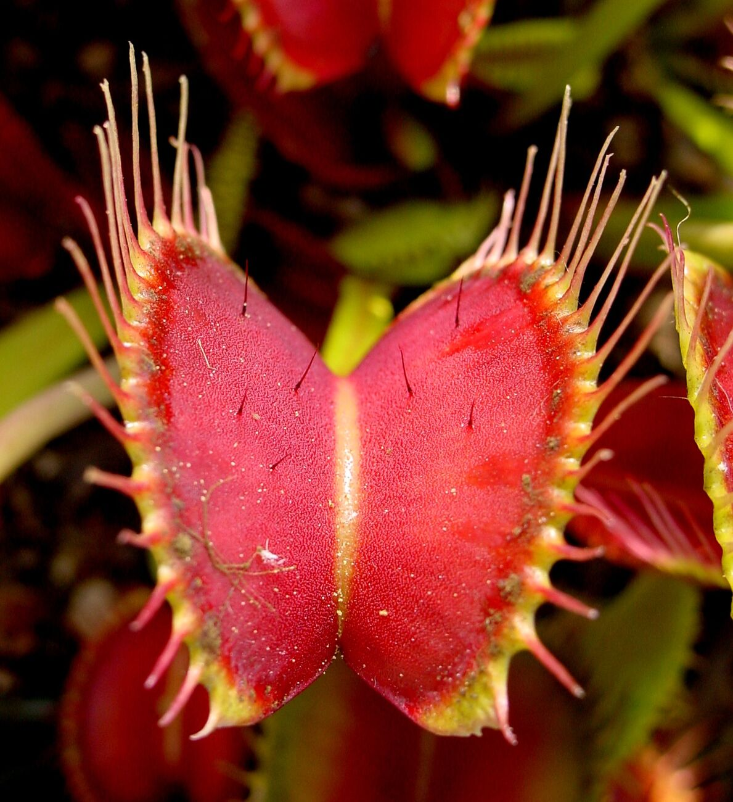
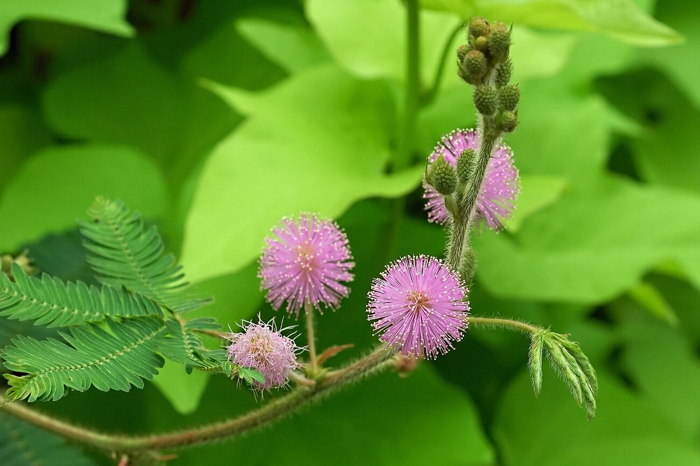
Un arbre en déficit hydrique émet réellement des sons. Ce n'est ni une métaphore ni une découverte récente : le phénomène est décrit depuis 1966, et son mécanisme physique est compris.
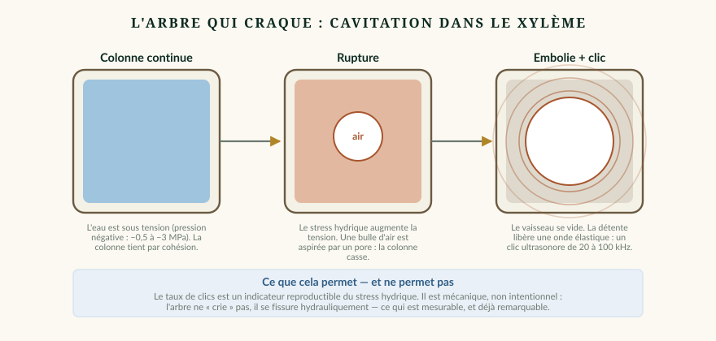
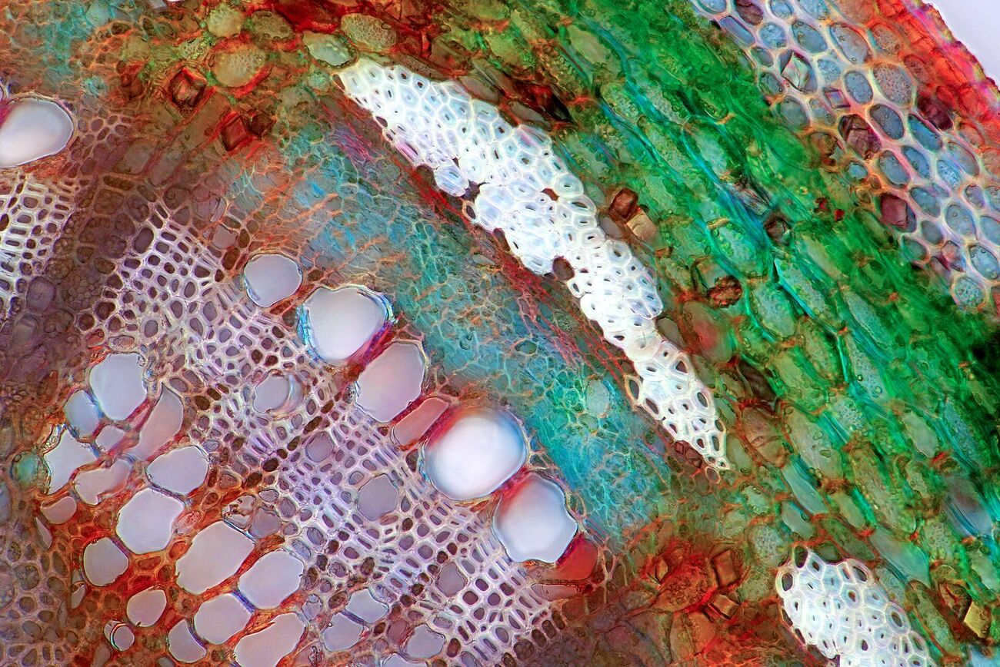
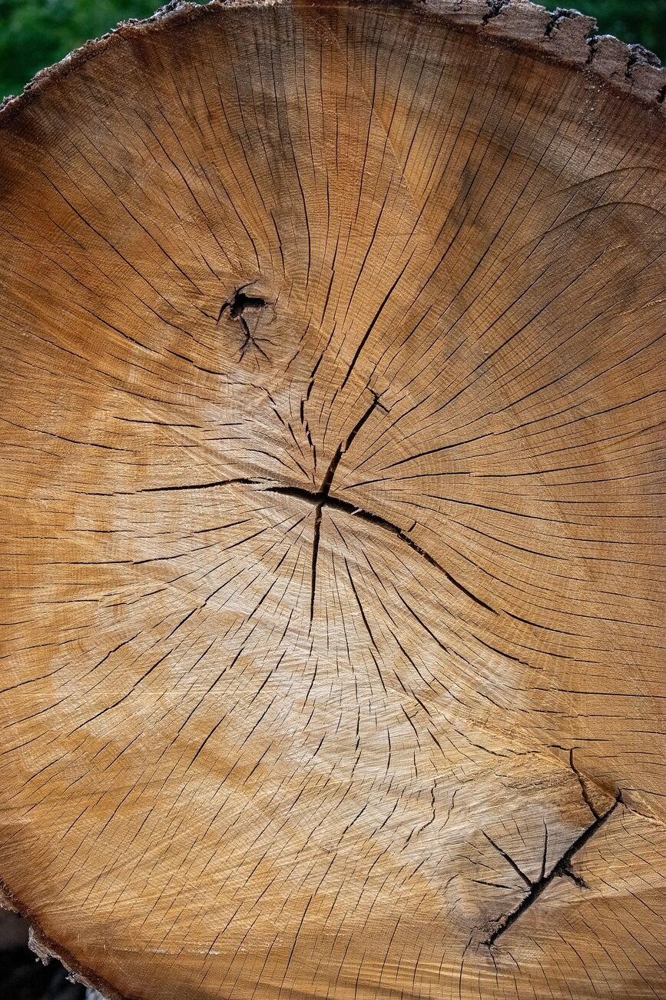
Acte de naissance. Milburn & Johnson (1966), Planta 69, p. 43-52, détectent les vibrations de cavitation dans le xylème de ricin — avec, littéralement, une tête de lecture de tourne-disque reliée à un amplificateur et un haut-parleur. Les clics étaient audibles.
Protocoles actuels. Détection au-dessus de 20 kHz pour s'affranchir du bruit de fond ; capteur de type R15 en bande 50-200 kHz ; seuils d'amplitude de 35 dB en laboratoire et 45 dB au champ pour filtrer les artefacts dus au vent.
Valeur diagnostique établie. Nolf, Beikircher, Rosner, Nolf & Mayr (2015), New Phytologist 208(2), p. 625-632 : sur 16 espèces et 3 cultivars, corrélation linéaire entre le potentiel hydrique à 50 % de perte de conductivité et l'activité acoustique maximale, p < 0,001, R² = 0,76. C'est un vrai indicateur de vulnérabilité à la sécheresse.
Et ce qui n'est PAS de la cavitation — point critique : le retrait du bois en déshydratation, la rupture mécanique, les émissions de l'écorce qui sèche, les mouvements d'organes sous le vent et les interférences radiofréquence des éclairages produisent tous des émissions acoustiques. Un « clic » n'est pas une preuve de cavitation.
L'étude qui a fait connaître ce champ au grand public est celle de Khait et al. (2023), Cell 186(7), p. 1328-1336.e10, qui a montré que ces sons sont aériens et informatifs. Le protocole mérite d'être détaillé, parce qu'il illustre exactement le niveau d'exigence qu'exige ce type d'affirmation.
| Élément du protocole | Mise en œuvre |
|---|---|
| Environnement | Boîte acoustique 50 × 100 × 150 cm, en sous-sol, atténuation ≥ 100 dB SPL |
| Captation | Deux microphones directionnels par plante, échantillonnage 500 kHz, filtre passe-haut 20 kHz |
| Contrôles | Même plante avant traitement ; plante voisine non traitée ; pot de terre sans plante |
| Résultat clé (tomate) | Sécheresse : 35,4 ± 6,1 sons/h · Section : 25,2 ± 3,2 · Tous contrôles : < 1 |
| Contrôle décisif | Pot seul : 0 son sur plus de 500 heures d'enregistrement |
| Fréquence de pic | ≈ 50 à 58 kHz — soit bien au-delà de l'audition humaine |
| Significativité | p < e⁻⁶, correction de Holm-Bonferroni sur 12 comparaisons |
Nardini, Cochard & Mayr (2024), Trends in Plant Science 29(6), p. 662-667, rappellent que la recherche sur l'émission sonore par les plantes a plus de cent ans, que le mécanisme est compris depuis les travaux de Milburn, et que « la preuve expérimentale d'un rôle de ces sons dans la communication plante-animal ou plante-plante fait toujours défaut ; à l'heure actuelle, ces idées restent hautement spéculatives ».
Son, Jang, Mathevon & Ryu (2024), New Phytologist 242(5), p. 1876-1880, ajoutent la distinction que la vulgarisation efface systématiquement : la plupart des études sur la sensibilité sonore des plantes portent sur des vibrations de substrat, non sur du son aérien. Leur conclusion est sans ambiguïté : « aucune preuve ne soutient une communication acoustique de plante à plante ».
Ce qu'il faut en conclure : l'émission est démontrée, la communication ne l'est pas. Le son de cavitation est très probablement un sous-produit physique — un craquement de parquet qui sèche. Informatif pour qui l'écoute ; pas émis pour être écouté.
Un dernier élément du socle, et c'est peut-être le plus important pour notre sujet : toutes ces grandeurs sont rythmées. L'arbre ne produit pas des événements isolés sur fond de calme, mais des oscillations permanentes indexées sur le jour, la saison et la disponibilité en eau.
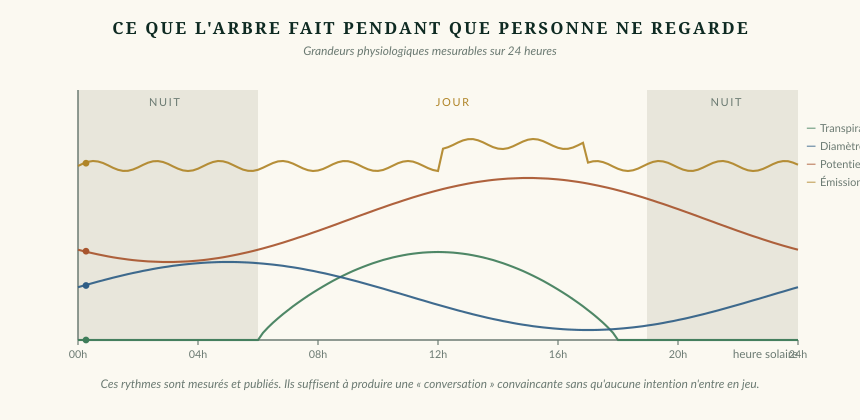
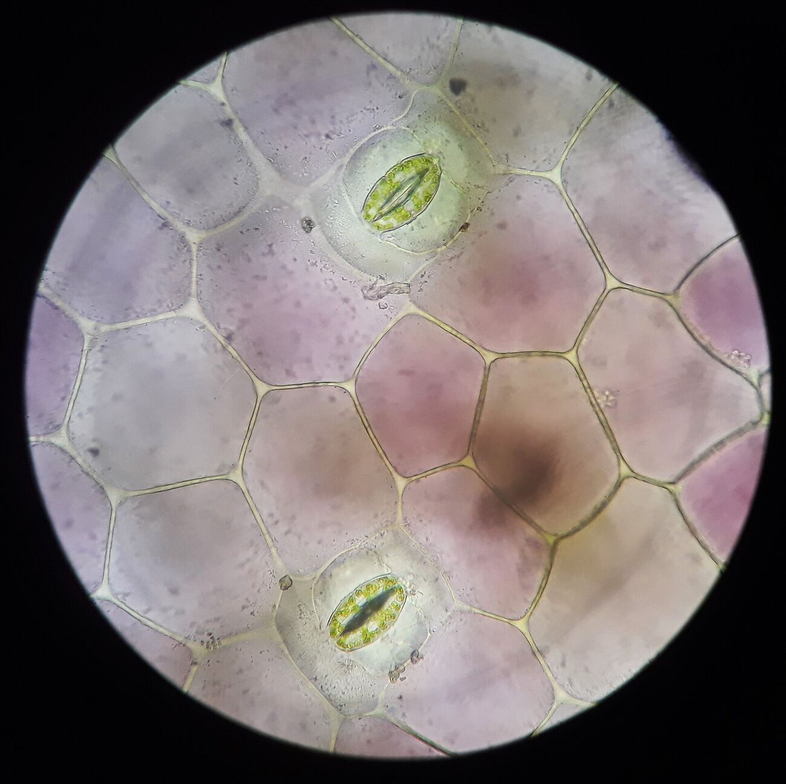
Ces rythmes suffisent, à eux seuls, à produire une « conversation » convaincante. Un système qui commente des grandeurs cycliques aura toujours quelque chose de pertinent à dire : le matin l'arbre « se réveille », l'après-midi il « a soif », la nuit il « se repose ». Ces énoncés seront exacts, corrélés aux données, et totalement dépourvus d'intentionnalité.
C'est le piège le plus fin du domaine, parce qu'il ne repose sur aucune erreur factuelle. Tout ce qui est dit est vrai. Seule l'attribution est fausse.
Entre le tissu vivant et le nombre affiché, cinq opérations transforment l'information. Chacune est nécessaire. Chacune perd ou ajoute quelque chose. Les connaître, c'est savoir ce qu'on tient dans la main.
Le mot « mesure » suggère un prélèvement neutre, comme si l'on cueillait une valeur déjà présente dans le monde. La réalité est tout autre : une mesure est une construction, le produit d'une chaîne d'opérations physiques dont chacune impose sa marque. Ce chapitre suit cette chaîne, maillon par maillon.
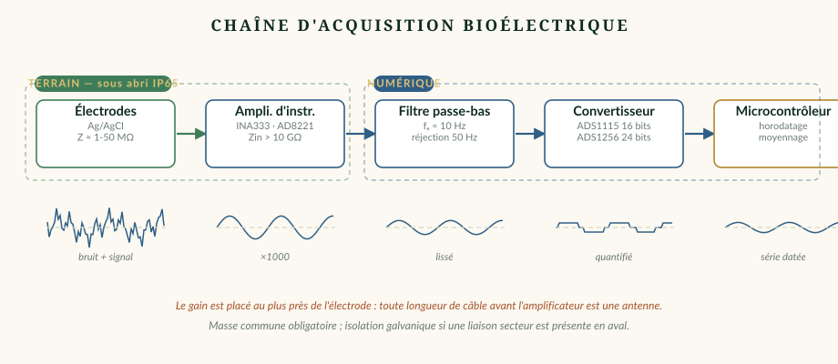
C'est le maillon le plus négligé et le plus décisif. Ce que vous mesurez n'est jamais « le tissu » : c'est la somme de trois impédances en série, dont une seule est biologique. Les deux impédances d'interface — métal contre bois, métal contre sol — sont plus instables que le signal recherché.
Elles dérivent avec l'humidité du contact, la pression d'appui, l'oxydation du métal et la température. Sur une électrode d'acier nue, la dérive des premières heures dépasse couramment la totalité du signal utile. C'est pourquoi la littérature sérieuse emploie des électrodes impolarisables — Pb/PbCl₂ chez Gibert et al. (2006), Ag/AgCl ailleurs — et pourquoi Hao et al. (2021) attribuent explicitement une part de leur signal à l'accumulation ionique à la surface de l'électrode.
Le signal est minuscule et sa source a une impédance énorme — de l'ordre du mégaohm à la dizaine de mégaohms. Il faut donc un amplificateur d'instrumentation à très haute impédance d'entrée, placé au plus près de l'électrode. Toute longueur de câble avant l'amplificateur est une antenne, et ce qu'elle capte n'est pas l'arbre.
Ici commence la véritable perte d'information, et elle est irréversible. Filtrer, c'est décider de ce qui est du signal et de ce qui est du bruit — une décision prise par l'ingénieur, en amont, souvent sans que l'utilisateur final en soit informé. Un filtre passe-bas à 10 Hz supprime tout ce qui est plus rapide. Si un phénomène biologique intéressant se produisait à 30 Hz, il n'existera jamais dans vos données, et rien dans vos données ne vous indiquera son absence.
Le continu devient discret. Deux décisions, toutes deux invisibles ensuite : la résolution (la plus petite variation représentable) et la fréquence d'échantillonnage. Une fréquence trop basse replie les composantes rapides dans la bande utile — c'est le repliement de spectre, qui fabrique des rythmes qui n'existent pas. Un signal parasite à 50 Hz mal filtré, échantillonné à 1 Hz, produit une oscillation lente parfaitement crédible.
Enfin, on moyenne. Une valeur toutes les quinze minutes, c'est la moyenne de neuf cents secondes réduite à un nombre. Toute la structure fine a disparu. Cette étape est obligatoire — une liaison radio longue portée ne transporte que quelques dizaines d'octets — mais elle signifie que le modèle de langage, en bout de chaîne, ne verra jamais le signal. Il verra un résumé de résumé.
Devant n'importe quel appareil qui prétend traduire une plante, posez ces cinq questions dans l'ordre : Quelles électrodes, et sont-elles polarisables ? Où est le gain ? Quelle bande passante, et qui l'a choisie ? Quelle résolution et quelle fréquence d'échantillonnage ? Quelle agrégation avant l'étage suivant ?
Un fabricant qui ne peut répondre à ces cinq questions ne vend pas un instrument de mesure. Il vend un instrument de musique à contrôleur biologique — ce qui est parfaitement respectable, à condition de le dire.
Un signal propre en laboratoire devient, en extérieur, une somme dont la part biologique est minoritaire. Voici les contaminants, classés par ordre d'importance décroissante — et la façon de les reconnaître.
Ce chapitre est le plus utile du livre pour quiconque voudra mesurer quoi que ce soit sur un arbre. Apprenez-le : il vous évitera des années de fausses certitudes, et il vous permettra d'évaluer instantanément la crédibilité de tout dispositif qu'on vous présentera.
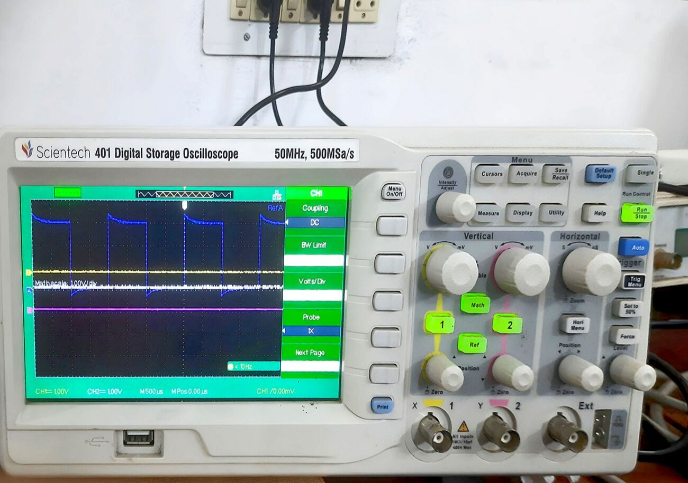
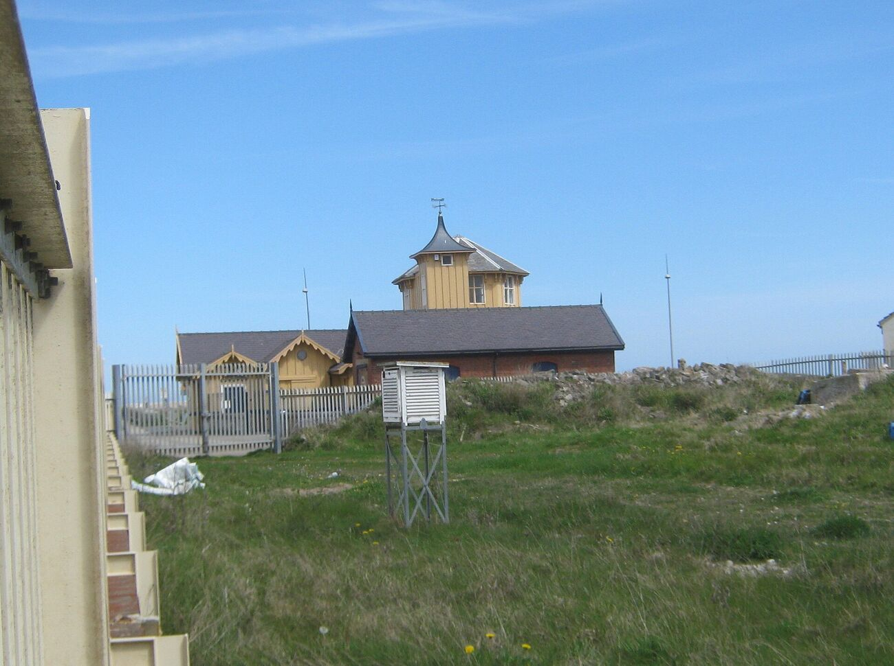
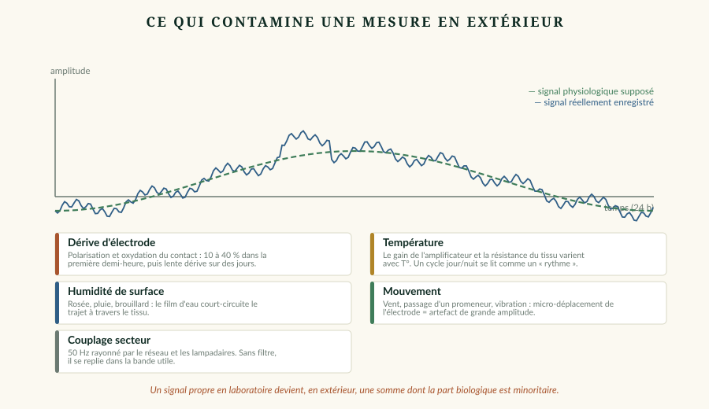
| Artefact | Mécanisme | Comment le reconnaître |
|---|---|---|
| 1. Dérive d'électrode | Polarisation et oxydation du contact métal/tissu | Dérive monotone sur les premières heures, puis lente sur des jours. Disparaît si l'on change d'électrode. |
| 2. Potentiel d'écoulement | Le mouvement de sève dans une matrice chargée génère un potentiel électrocinétique | Disparaît après la chute des feuilles (Gibert et al., 2006). Corrélé au flux de sève, pas aux événements. |
| 3. Blessure d'insertion | L'électrode enfoncée provoque elle-même une réponse et une cicatrisation | Les premières heures ou jours de série sont inexploitables. À jeter systématiquement. |
| 4. Dérive thermique | Le gain de l'amplificateur et la résistance du tissu varient avec la température | Corrélation quasi parfaite avec la température ambiante. Se lit comme un « rythme circadien ». |
| 5. Humidité de surface | Rosée, pluie, brouillard : le film d'eau court-circuite le trajet à travers le tissu | Sauts brusques à l'aube et après la pluie. Corrélé à l'humidité relative, pas à la physiologie. |
| 6. Mouvement | Vent, promeneur, vibration : micro-déplacement de l'électrode | Événements de grande amplitude, brefs, corrélés à l'anémomètre. Les plus faciles à prendre pour des « réactions ». |
| 7. Couplage électromagnétique | 50 Hz rayonné par le réseau, les lampadaires, et le corps de l'opérateur | Sans filtre, se replie dans la bande utile. S'aggrave quand on s'approche : l'opérateur devient antenne. |
La difficulté de mesurer une électrophysiologie végétale en dehors d'un environnement blindé est un problème de recherche à part entière. La référence à connaître est Tran, Dutoit, Najdenovska, Wallbridge, Plummer, Mazza, Raileanu & Camps (2019), « Electrophysiological assessment of plant status outside a Faraday cage using supervised machine learning », Scientific Reports 9:17073.
Ces auteurs ont conçu un capteur destiné à la production sous serre, sans cage de Faraday, capable de détecter une modification de l'activité bioélectrique sous stress hydrique ainsi qu'un rythme nycthéméral, avec classification automatique supervisée du statut physiologique.
Le point à retenir est double. D'abord : c'est faisable — l'entreprise n'est pas vaine. Ensuite : il a fallu une équipe de huit chercheurs, un capteur dédié et de l'apprentissage supervisé pour y parvenir de façon défendable. Ce n'est pas un montage de week-end, et tout dispositif qui prétend le faire sans ces précautions doit être regardé avec attention.
Il existe un remède, et un seul, à cette situation. Il ne consiste pas à supprimer les artefacts — c'est impossible — mais à les rendre identifiables, en enregistrant en parallèle les grandeurs qui les causent.
Toute voie bioélectrique doit être accompagnée, au minimum, de quatre voies de contexte : température de l'air, humidité relative, vitesse du vent, et une mesure de l'état hydrique (humidité du sol ou flux de sève).
Sans elles, vous ne pouvez jamais distinguer une variation physiologique d'une dérive thermo-hygrométrique. Avec elles, vous le pouvez souvent — en régressant le signal sur les voies de contexte et en n'examinant que le résidu.
Corollaire pratique : un dispositif qui mesure uniquement le bioélectrique est, par construction, incapable de savoir ce qu'il mesure. C'est le cas de la quasi-totalité des appareils grand public de « musique des plantes ».
Il y a quelque chose de vertigineux à réaliser qu'un tracé « vivant », expressif, qui semble répondre à votre présence, peut n'être que votre propre corps couplé capacitivement à une électrode. La première fois qu'on en fait l'expérience — en s'approchant et en s'éloignant d'un montage, et en voyant la courbe suivre docilement — est un moment d'humilité qui vaut tous les raisonnements.
Ce livre vous encourage à provoquer ce moment, au chapitre 25. Non pour vous décourager, mais parce qu'après l'avoir vécu, vous ne regarderez plus jamais un tracé de la même façon — et c'est exactement la disposition d'esprit dont on a besoin pour travailler honnêtement dans ce domaine.
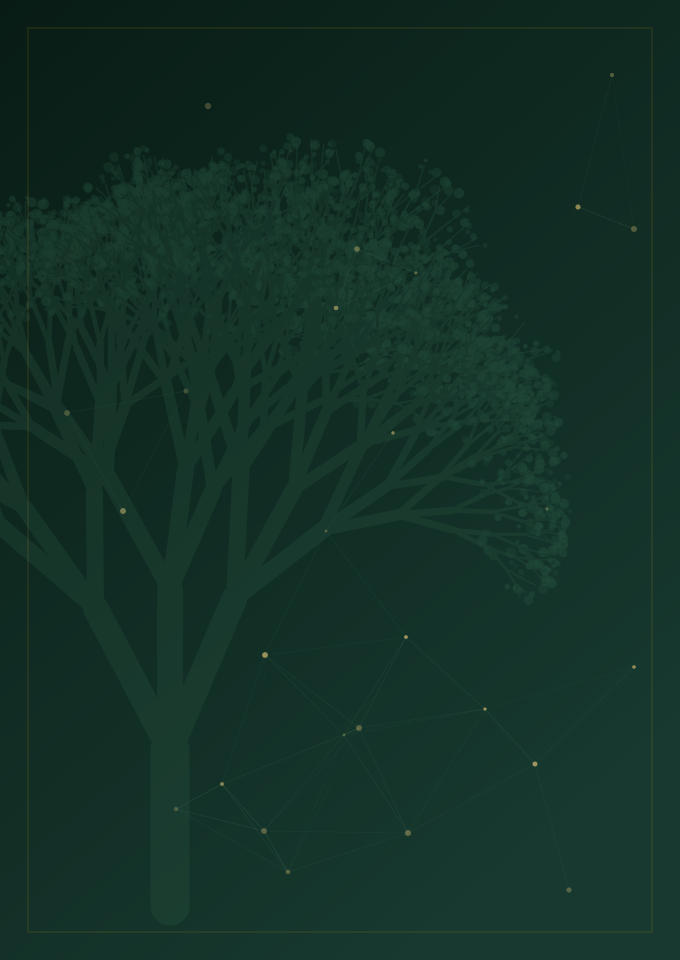
Prenons une phrase produite par le dispositif et demandons, mot par mot : d'où vient ceci ? L'exercice est simple, il ne demande aucun matériel, et il est décisif.
Reprenons l'énoncé le plus diffusé : « L'air est vif contre mon écorce, et mes racines sont lourdes d'humidité. » Décomposons-le sans indulgence.
| Élément de la phrase | Origine réelle | Traçable ? |
|---|---|---|
| « L'air est vif » | Une valeur de température basse, convertie en adjectif par le modèle | Partiellement — le seuil du « vif » est arbitraire |
| « contre mon écorce » | Le rôle assigné dans l'invite (« tu es un arbre ») | Non — aucun capteur ne mesure une écorce |
| « mes racines » | Le rôle assigné | Non |
| « sont lourdes d'humidité » | Une valeur d'humidité du sol élevée, métaphorisée | Partiellement — « lourde » est une invention du modèle |
| La syntaxe, le rythme, le parallélisme des deux propositions | Le modèle de langage, intégralement | Non |
| Le fait de dire « je » | L'invite, intégralement | Non |
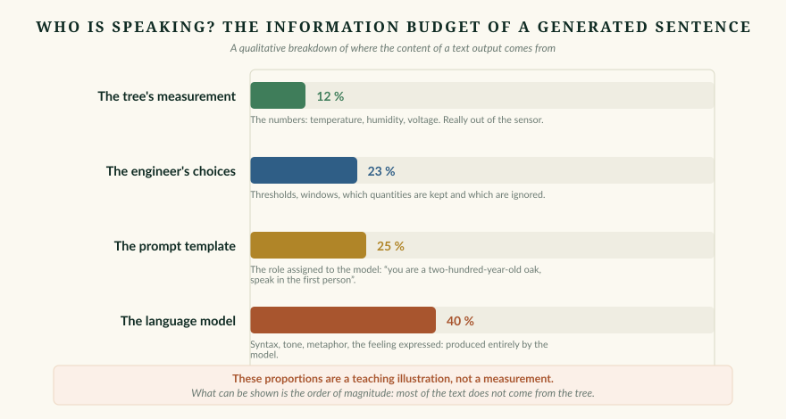
Ce sont les nombres, et eux seuls : 14,2 °C, 81 % d'humidité relative, 0,19 m³/m³ d'humidité volumique du sol. C'est réel, c'est daté, c'est vérifiable. C'est aussi, en volume, minuscule : une poignée de valeurs numériques.
Contribution largement sous-estimée. Quelles grandeurs sont retenues et lesquelles sont ignorées ? À partir de quel seuil une humidité devient-elle « basse » ? Sur quelle fenêtre calcule-t-on une tendance ? Ces décisions déterminent ce que l'arbre peut dire, exactement comme le vocabulaire de cinquante mots du clavier d'Alexandre Ferran déterminait entièrement ses énoncés possibles (chapitre 15).
« Tu es un chêne pédonculé de deux cents ans. Tu t'exprimes à la première personne. » Tout est là : l'identité, l'âge, le registre, la posture. C'est une création littéraire, écrite par un humain, et c'est elle qui fait exister le personnage.
Il fournit la syntaxe, le ton, les images, la longueur, et — c'est le point crucial — le sentiment exprimé. Quand la sortie évoque une nostalgie du voisinage racinaire perdu, cette nostalgie ne provient d'aucun capteur : elle provient de la littérature écologique que le modèle a absorbée pendant son entraînement.
« Mais nous aussi ! Un humain qui décrit sa sensation de froid ajoute de la syntaxe et des métaphores à une information thermique. En quoi est-ce différent ? »
L'objection est sérieuse et mérite mieux qu'une esquive. La différence tient en un point : chez l'humain, le même système éprouve et formule. La sensation et sa mise en mots appartiennent au même organisme, et la seconde est causalement liée à la première. Dans notre dispositif, l'arbre fournit les nombres, et un système entièrement séparé — entraîné sur des textes humains, sans aucun accès à l'arbre — fournit l'expression.
Ce n'est donc pas une différence de degré dans l'ajout de forme. C'est une discontinuité de sujet : deux entités, dont une seule a une expérience, et c'est l'autre qui parle.
Savoir comment fonctionne un dispositif ne protège pas de son effet. Ce fait est démontré depuis 1966, et il existe un précédent expérimental si exact qu'il fait froid dans le dos.
En 1966, Joseph Weizenbaum publie la description d'un programme de quelques centaines de lignes qui simule un psychothérapeute rogérien par simple substitution de motifs. Il l'appelle ELIZA. Le programme ne comprend rien : il repère des mots-clés et retourne la phrase de l'utilisateur sous forme de question.
Ce que Weizenbaum observe le stupéfie. Sa propre secrétaire, qui le voyait écrire le programme et savait exactement ce qu'il faisait, lui demande de quitter la pièce pour pouvoir converser en privé avec la machine. Des utilisateurs à qui l'on explique le mécanisme continuent de lui prêter une compréhension.
Je n'avais pas réalisé que des expositions extrêmement courtes à un programme informatique relativement simple pouvaient induire de puissantes pensées délirantes chez des gens tout à fait normaux.
Joseph Weizenbaum
Weizenbaum, J. (1966), « ELIZA — a computer program for the study of natural language communication between man and machine », Communications of the ACM 9(1), p. 36-45. L'acte fondateur.
Reeves, B. & Nass, C. (1996), The Media Equation, CSLI / Cambridge University Press, et Nass, C. & Moon, Y. (2000), « Machines and Mindlessness: Social Responses to Computers », Journal of Social Issues 56(1), p. 81-103. Le paradigme dit CASA établit que les humains appliquent aux machines des règles sociales sans y penser — le terme anglais est mindlessly — et que cette application persiste chez des sujets qui affirment par ailleurs, sincèrement, que les machines n'ont ni intentions ni émotions.
La conséquence pour notre sujet est directe et sévère : expliquer le dispositif ne suffit pas à en neutraliser l'effet. C'est pourquoi les chapitres suivants ne se contentent pas d'explications et proposent des protocoles.
Il existe un cas expérimental qui reproduit avec une exactitude troublante la structure d'un dispositif « d'arbre parlant ». Il vaut la peine d'être exposé en détail.
Dans les années 1990, la communication facilitée s'est répandue comme méthode d'aide à la communication de personnes non verbales. Le principe : un « facilitateur » soutient la main ou le bras de la personne pendant qu'elle désigne des lettres sur un clavier. Des messages élaborés apparaissaient — parfois des poèmes, parfois des accusations graves. Les facilitateurs étaient, dans leur immense majorité, sincères : ils étaient convaincus de n'être qu'un support physique.
Wegner, D. M., Fuller, V. A. & Sparrow, B. (2003), « Clever hands: uncontrolled intelligence in facilitated communication », Journal of Personality and Social Psychology 85(1), p. 5-19.
Le protocole est d'une élégance redoutable : on pose des questions dont le facilitateur connaît la réponse mais pas la personne facilitée. Résultat : les réponses sont correctes. Puis on inverse : questions dont la personne facilitée connaît la réponse mais pas le facilitateur. Les réponses deviennent fausses.
La conclusion est sans échappatoire : c'est le facilitateur qui produit le message, par effet idéomoteur — des micro-mouvements involontaires, sous le seuil de la conscience. Et, point essentiel, il attribue sincèrement l'auteurité à l'autre. Il ne ment pas. Il ne sait pas.
| Communication facilitée | Dispositif de plante parlante |
|---|---|
| Une personne dont on suppose qu'elle a quelque chose à dire | Un arbre dont on suppose qu'il a quelque chose à dire |
| Un signal moteur réel mais faible et ambigu | Un signal électrique réel mais faible et ambigu |
| Un facilitateur qui « ne fait que soutenir » | Un modèle de langage qui « ne fait que traduire » |
| Un clavier au vocabulaire prédéfini | Un vocabulaire ou une invite prédéfinis |
| Un opérateur qui décide où le message commence et finit | Un opérateur qui décide de la fenêtre et du déclenchement |
| Une sincérité totale de toutes les parties | Une sincérité totale de toutes les parties |
| Un test croisé qui a tranché | Un test croisé que personne n'a fait |
Il n'établit pas que les dispositifs de plante parlante ne produisent rien. Il établit que la structure du dispositif rend l'auto-illusion sincère non seulement possible mais attendue, et qu'aucune quantité de bonne foi ne peut y remédier.
La bonne foi n'est pas une méthode. Seul un test croisé en est une. Le chapitre 16 en propose trois.
En 2015, dix ans avant Dublin, un praticien français a eu la même idée — et l'a décrite avec une honnêteté que peu d'ingénieurs atteignent. Son dispositif est le meilleur laboratoire conceptuel dont nous disposions.
Le 1er novembre 2015, au Grand Rex à Paris, lors d'un événement de méditation collective organisé un mois avant la COP21, Alexandre Ferran présente un « concert de plantes ». Le dispositif est celui de la communauté italienne de Damanhur : deux pinces, l'une dans la terre près des racines, l'autre sur une feuille, reliées à un boîtier qui convertit les variations mesurées en messages MIDI.
Jusque-là, rien d'original : ce type d'appareil existe depuis les années 1970. Ce que Ferran a ajouté est décisif — et il le raconte lui-même :
Je suis le premier à avoir eu l'idée saugrenue de mettre des mots, vu que c'est du MIDI ; après, avec un sampler, dans un ordinateur, on peut mettre un piano… ou des mots.
Alexandre Ferran, Le Chant des Plantes, Grand Rex, 2015
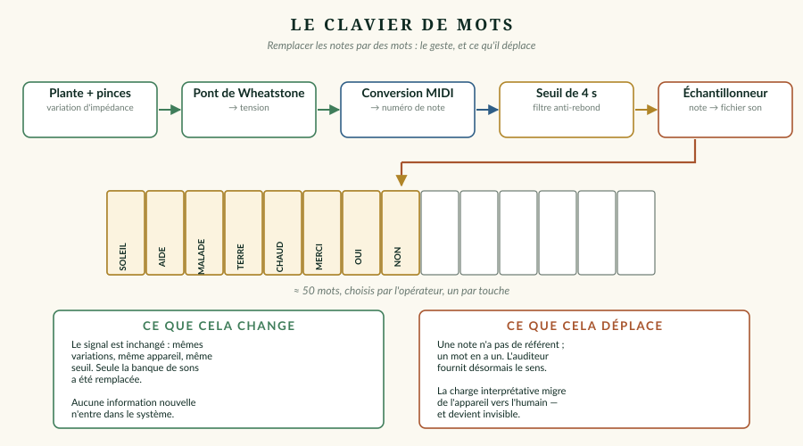
Ce que le dispositif a produit ce soir-là, en public, est intégralement documenté par la vidéo : huit mots au total — « SOLEIL », « AIDE », « MALADE », « TERRE », « SOLEIL », puis « TERRE », puis « CHAUD », « AIDE ». Présentés comme « la parole de sagesse des plantes » pour cette occasion.
Avant toute critique, il faut rendre justice à une phrase que Ferran prononce au début de la vidéo, et qui est la meilleure description de son propre dispositif qu'on puisse souhaiter :
L'appareil ne retranscrit pas la musique de la plante ; ça lui donne la possibilité d'avoir des mains qui vont appuyer sur un clavier.
Alexandre Ferran, même source
C'est une définition exacte du parameter mapping, formulée sans jargon par quelqu'un qui n'appartient pas au monde académique. Elle est plus précise que la plupart des communiqués de fabricants d'appareils de bio-sonification. Cet ouvrage la cite avec respect.
Un mapping signal → note et un mapping signal → mot sont formellement identiques : dans les deux cas, une table de correspondance. Le signal, lui, est rigoureusement inchangé — mêmes variations, même appareil, même seuil. Seule la banque de sons a été remplacée.
Mais ils ne sont pas sémantiquement identiques : une note n'a pas de référent, un mot en a un. Passer de l'un à l'autre n'ajoute aucune information — cela ajoute de la référence dans la tête de l'auditeur.
C'est un transfert de charge interprétative du système vers l'humain. Le gain est perceptif et rhétorique ; il n'est jamais informationnel. Ferran le dit sans le savoir : « quand tout à coup elle utilise le langage verbal qui est le nôtre… c'est autrement plus impressionnant ».
Les huit mots produits au Grand Rex forment un ensemble cohérent avec le thème de la soirée : soleil, aide, malade, terre, chaud. On y lit spontanément un message écologique. Mais c'est l'opérateur qui a choisi les cinquante mots du dictionnaire.
Faites l'expérience mentale : chargez le même appareil, sur la même plante, avec cinquante mots de cuisine — « sel », « beurre », « cuisson », « four ». La plante produira des énoncés culinaires, avec exactement la même conviction. Le vocabulaire disponible contraint entièrement l'énoncé possible. Ce que l'on entend est, au sens strict, ce que l'on a mis à disposition.
Il y a plus. C'est aussi l'opérateur qui décide où le message commence et finit — « Bon, je crois que c'était son message… ». La segmentation du flux en « énoncé » est un acte humain, non machine. Nous retrouvons trait pour trait la structure de la communication facilitée du chapitre précédent.
Le dispositif du Grand Rex ne comportait aucune plante témoin, aucune condition « pince débranchée ou posée sur un objet inerte », aucun double aveugle, aucun pré-enregistrement du vocabulaire attendu. Ce n'est pas un reproche adressé à un artiste qui ne prétendait pas faire de science — c'est le constat qu'aucune conclusion ne peut en être tirée, dans un sens comme dans l'autre.
Et c'est aussi, exactement, ce qui manque au dispositif de 2025. Dix ans de progrès technique, zéro progrès méthodologique.
La littérature scientifique fournit un critère de démarcation utilisable. Un mapping est défendable s'il satisfait trois conditions.
| Critère | Ce qu'il exige | Exemple conforme |
|---|---|---|
| Isomorphe | Préserve une structure physique mesurable | Buehler (MIT) : les modes de vibration des acides aminés sont transposés dans l'audible en conservant les rapports de fréquences. Chaque acide aminé devient un accord. |
| Inversible | On peut remonter du son à la donnée | Même travail : musique → séquence protéique → repliement prédit → validation par modélisation. |
| Falsifiable | Des conditions d'échec sont spécifiées à l'avance | Temple, sonification de l'ADN : le mapping est motivé par la granularité du codon, qui est la granularité fonctionnelle réelle du génome. |
Markus Buehler emploie effectivement les mots « langage » et « vocabulaire » à propos des protéines — mais au sens des modèles de langage protéiques, où une séquence d'acides aminés est traitée comme un langage formel. Aucun de ses travaux ne convertit des données biologiques en mots de langue naturelle prononcés. Il ne faut pas le lui attribuer.
Par ailleurs, la recherche menée pour cet ouvrage n'a trouvé aucune sonification établie de l'ADN ou des protéines vers des phonèmes produisant de la parole intelligible. C'est un résultat négatif, affirmé comme tel : nous ne citerons donc aucune source sur ce point.
Mesuré à cette aune, le clavier de mots n'est ni isomorphe — rien dans le signal ne correspond à « SOLEIL » —, ni inversible, ni falsifiable. Cela n'en fait pas une imposture : cela en fait une œuvre, ce que son auteur n'a d'ailleurs jamais nié. Le problème ne commence que lorsqu'on lui prête l'autorité d'une mesure.
Comprendre ne suffit pas — c'est la leçon d'ELIZA. Il faut éprouver. Voici trois protocoles courts, réalisables par quiconque, qui tranchent réellement la question.
Ce chapitre est le plus opérationnel du livre. Les trois tests qu'il décrit ne demandent aucun matériel supplémentaire, prennent quelques heures, et sont capables de vous détromper. C'est très exactement pour cette raison qu'ils sont presque toujours omis.
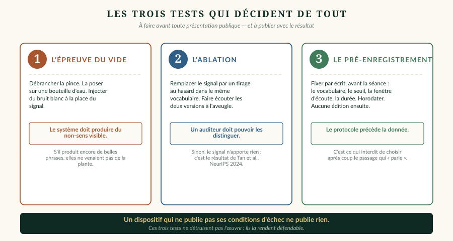
Si le dispositif produit des sorties convaincantes en l'absence de toute plante, alors les sorties convaincantes ne prouvent rien quand une plante est présente.
Ce qu'il faut consigner. Pour chaque condition : le nombre d'événements déclenchés, et — si le dispositif produit du texte ou de la musique — un échantillon anonymisé. Puis faites juger ces échantillons par une personne qui ignore les conditions.
Le dispositif doit produire du non-sens visible en conditions 2, 3 et 4. S'il continue de produire de belles phrases ou de la musique agréable, la conclusion est directe : ces belles phrases ne venaient pas de la plante. La condition 3 est la plus importante — c'est l'équivalent exact du « pot de terre sans plante » de Khait et al., qui n'a produit aucun son sur plus de cinq cents heures.
Piège fréquent. Ne jugez pas vous-même vos propres échantillons en sachant de quelle condition ils viennent. C'est exactement l'erreur que le protocole doit empêcher.
Remplacer le signal par du hasard, dans la même chaîne, avec le même vocabulaire. Si personne ne distingue les deux, le signal n'apportait rien.
Seuil de décision. Un taux de bonne réponse proche de 50 % signifie que les auditeurs ne distinguent pas — donc que le signal n'apporte pas d'information perceptible. Pour être significatif à 5 % avec dix auditeurs, il faut au moins neuf bonnes réponses sur dix.
Ce n'est pas une provocation : c'est la transposition d'un résultat publié. Tan, Merrill, Gupta, Althoff & Hartvigsen (2024), Are Language Models Actually Useful for Time Series Forecasting?, NeurIPS 2024, ont montré que sur trois méthodes populaires de traitement de séries temporelles par modèle de langage, retirer le modèle ne dégradait pas les performances, et les améliorait souvent. L'ablation est la méthode standard pour mesurer la contribution réelle d'un composant. Elle vaut ici comme ailleurs.
Le protocole doit précéder la donnée. Sans quoi rien n'empêche de choisir, après coup, le passage qui « parle » — et il y en a toujours un.
Le point qui dérange. La quatrième règle est la plus difficile à tenir, parce qu'une séance entière est souvent ennuyeuse et que trois minutes bien choisies sont bouleversantes. C'est précisément pour cela que la règle existe.
Il interdit le mécanisme le plus puissant de toute la chaîne d'auto-illusion : la sélection rétrospective. Sur trois heures d'enregistrement d'un signal bruité, il existera toujours un passage de deux minutes qui semble répondre à ce qui s'est passé dans la pièce. Ce n'est pas une coïncidence remarquable ; c'est une propriété statistique ordinaire des séries longues.
Un dispositif qui ne publie pas ses conditions d'échec ne publie rien.
Ces trois tests ne détruisent pas l'œuvre — ils la rendent défendable. Un artiste qui les pratique et en publie les résultats peut ensuite revendiquer tout ce qu'il veut sur le plan esthétique ou spirituel : il aura établi, de façon vérifiable, ce que son dispositif fait et ne fait pas. C'est une position infiniment plus solide que celle de qui se contente d'affirmer.
Une question mérite d'être posée avant de faire ces tests, et il vaut mieux y répondre honnêtement : qu'est-ce que je risque de perdre si le résultat est négatif ?
Si la réponse est « ma relation à cet arbre », alors une bonne nouvelle : cette relation ne dépendait pas du dispositif, et ces tests ne peuvent rien lui faire. Si la réponse est « ma certitude d'avoir raison », alors ces tests sont exactement ce dont vous avez besoin. Et si la réponse est « mon gagne-pain », c'est une raison honorable d'hésiter — mais elle mérite d'être nommée pour ce qu'elle est.
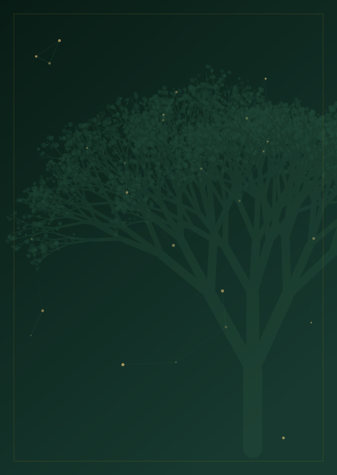
L'idée qu'un arbre puisse être un interlocuteur n'est ni nouvelle, ni marginale, ni naïve. Elle est, à l'échelle de l'humanité, majoritaire. Ce chapitre expose ce que les sciences humaines en disent, sans complaisance et sans mépris.
Une remarque préalable s'impose, parce qu'elle change la façon de lire tout ce qui suit. Lorsqu'un observateur contemporain qualifie d'« animisme » le fait de traiter un arbre comme une personne, il suppose implicitement que la position par défaut — l'arbre comme objet — est neutre, et que l'autre est une addition, une croyance surajoutée. Ce n'est pas exact. Les deux positions sont des constructions culturelles, et la seconde est historiquement et géographiquement bien plus répandue que la première.
La réduction du vivant non humain au statut d'objet est une opération intellectuelle datable, largement européenne, et récente à l'échelle de l'histoire humaine. Elle a produit des résultats scientifiques considérables — cet ouvrage en est truffé — et elle n'est pas pour autant la description spontanée du monde. C'est une discipline apprise.
Elle autorise à prendre au sérieux, comme objets d'étude légitimes, les traditions qui traitent les arbres comme des personnes. Elle interdit de les disqualifier d'emblée au nom d'une évidence qui n'en est pas une.
Elle n'autorise pas à conclure que ces traditions ont raison sur le plan factuel. « Cette position est culturellement construite » s'applique aussi à elles. Le relativisme qui sert à défendre une croyance particulière cesse commodément d'être invoqué dès qu'il faudrait l'appliquer à cette croyance-là.
L'Europe a eu ses arbres sacrés, et la documentation est réelle — quoique presque toujours indirecte, filtrée par des auteurs romains puis chrétiens qui décrivaient des pratiques qu'ils combattaient.
| Élément | Statut documentaire |
|---|---|
| Les Celtes vénéraient des arbres et des bosquets | Attesté par sources gréco-romaines et toponymie |
| Le terme nemeton désigne un sanctuaire, souvent un bosquet | Attesté — épigraphie et toponymie (Nemetacum, Vernemeton…) |
| Le chêne tenait une place particulière | Probable — repose largement sur Pline l'Ancien, source hostile et tardive |
| Un rituel druidique du gui sur le chêne | Une seule source : Pline, Histoire naturelle, XVI. Non corroborée |
| Un corpus doctrinal druidique transmis | Non — les druides n'écrivaient pas leur enseignement. Il n'y a pas de texte druidique |
| Une continuité ininterrompue jusqu'à aujourd'hui | Non — le druidisme contemporain est une reconstruction, principalement à partir du XVIIIe siècle |
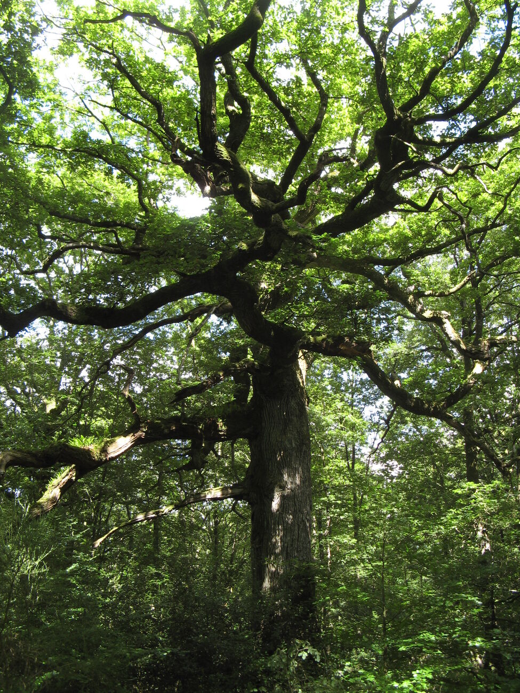
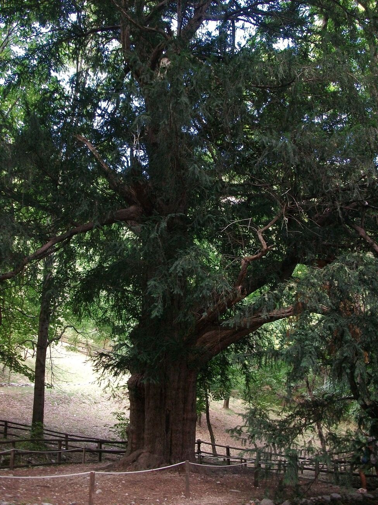
On pourrait croire que ce tableau vise à démonter le druidisme contemporain. C'est le contraire. Une pratique n'a pas besoin d'être ancienne pour être légitime, et prétendre une ancienneté qu'on n'a pas est la plus mauvaise façon de se défendre : cela expose à être démenti sur un terrain où l'on ne peut pas gagner.
Un druidisme contemporain qui s'assume comme contemporain — nourri de sources anciennes, mais recomposé et vivant aujourd'hui — est infiniment plus solide qu'un druidisme qui revendique une transmission ininterrompue que l'histoire dément. Le premier peut discuter avec un historien ; le second doit l'éviter.
L'ogham est réel, daté, gravé dans la pierre. Le « calendrier des arbres » qu'on lui associe est une création du XXᵉ siècle. Les deux méritent d'être connus — à condition de ne pas les confondre.
Puisque notre enquête aboutit à Dublin, il serait dommage de ne pas examiner ce que l'Irlande a produit de plus intéressant sur le rapport entre arbres et langage : l'ogham.
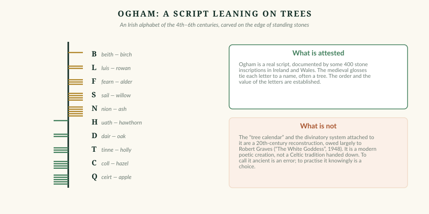
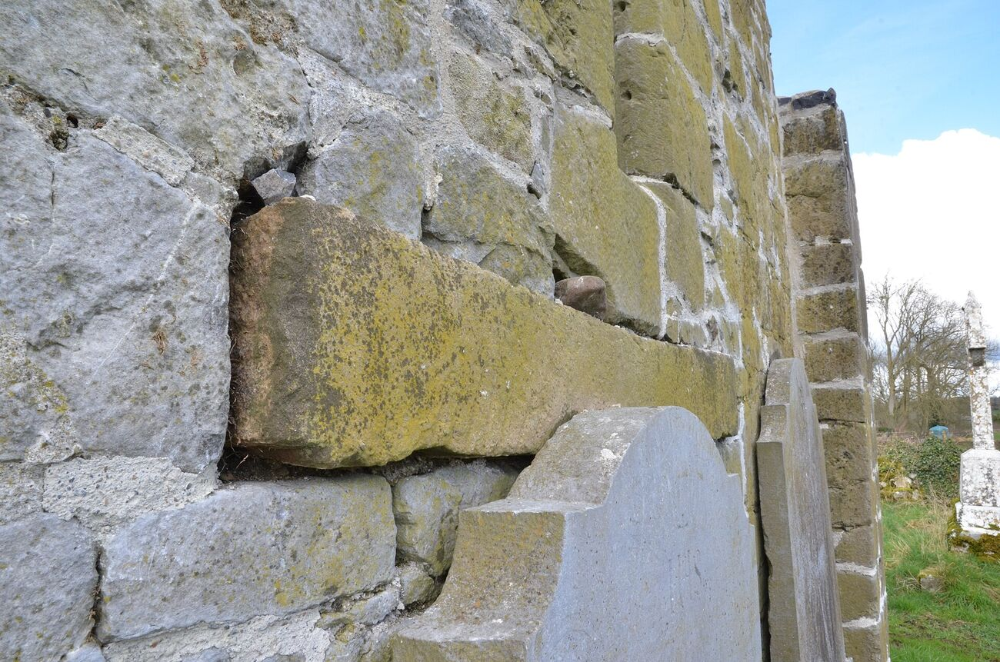
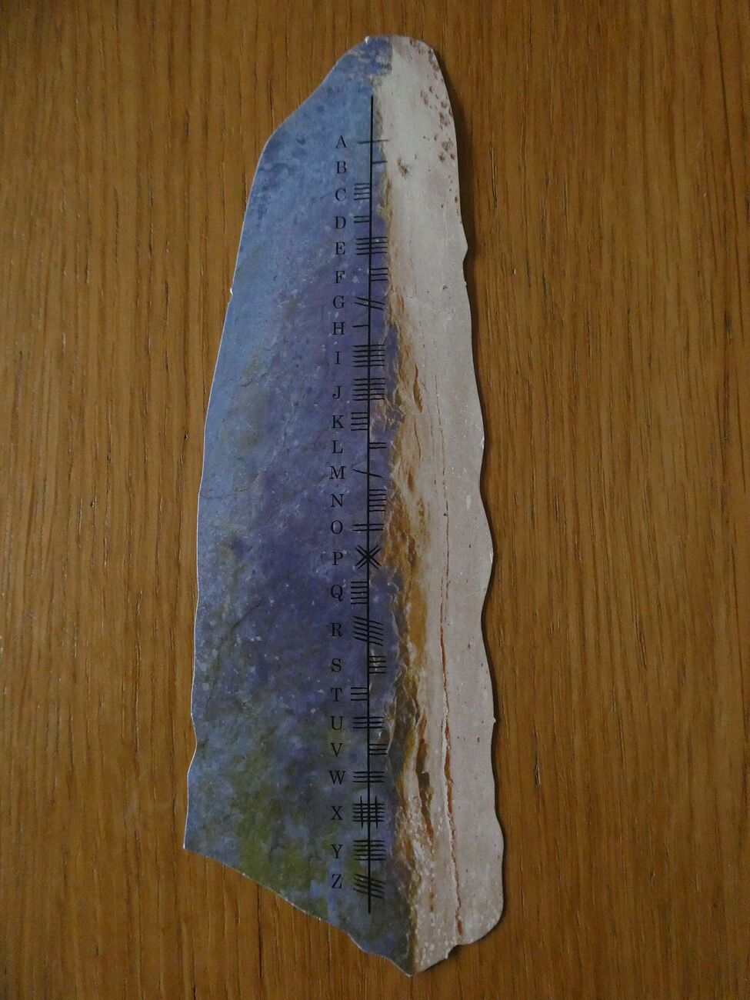
Le « calendrier des arbres » — treize mois lunaires associés chacun à un arbre, avec des correspondances de caractère et un usage divinatoire — est une reconstruction du XXe siècle, due pour l'essentiel à Robert Graves dans The White Goddess (1948).
Graves était un poète remarquable et ne prétendait pas faire œuvre d'historien. Son livre est une méditation poétique sur la fonction mythique, non une étude philologique. Les celtisants sont unanimes : ce calendrier n'a pas d'existence dans les sources médiévales irlandaises.
La dire ancienne est une erreur factuelle. La pratiquer en le sachant est un choix — et un choix parfaitement défendable : une création de 1948 n'est pas moins opérante pour qui la travaille. Elle est simplement de 1948.
Il y a une leçon, et elle est belle. Dans l'ogham, l'arbre n'est pas ce qui parle : il est ce qui fournit le nom de la lettre. Le bouleau ne s'exprime pas ; il prête son nom au son /b/. Le système ne prétend pas que l'arbre a quelque chose à dire — il l'installe dans l'infrastructure même de l'écriture.
C'est exactement la position inverse de celle du dispositif de 2025, et elle est plus subtile. Là où l'arbre parlant place l'arbre en position de locuteur — position qu'il ne peut pas tenir —, l'ogham le place en position de fondement du sens : ce par quoi on peut dire, plutôt que ce qui dit.
Voilà peut-être la question la plus utile que ce livre puisse poser à un praticien : voulez-vous que l'arbre vous parle, ou voulez-vous apprendre sa langue ?
Ce n'est pas la même démarche. La première attend une traduction, et la déception ou l'illusion sont au bout. La seconde demande du temps, de l'attention, une patience de saisons — et elle ne produit aucun énoncé transmissible. L'ogham, en donnant aux lettres des noms d'arbres, a choisi la seconde.
Le protocole du chapitre 25 est construit sur cette hypothèse : passer du temps auprès d'un arbre précis, régulièrement, en consignant à l'aveugle. C'est lent et cela ne fait pas une vidéo. C'est aussi, probablement, la seule chose qui marche.
Les traditions chamaniques ont une pratique du dialogue avec le végétal, et elles ont aussi, contrairement à ce qu'on croit souvent, une théorie de l'erreur. C'est cette théorie qui nous intéresse ici.
Dans de nombreuses traditions, le rapport au végétal ne relève pas de la conversation ordinaire. Il suppose un état de conscience modifié, un protocole d'entrée et de sortie, une relation durable avec un végétal particulier, et — point capital — un cadre de validation qui n'est pas laissé à l'appréciation solitaire du praticien.
| Dialogue chamanique | Arbre parlant technique | |
|---|---|---|
| Canal | Interne : vision, sensation, rêve, chant reçu | Externe : haut-parleur |
| Coût d'accès | Élevé : années d'apprentissage, diète, jeûne, veille | Nul : on s'assoit et on parle |
| Durée de la relation | Longue : une plante alliée se travaille sur des années | Instantanée et jetable |
| Validation | Collective : la communauté, l'aîné, l'efficacité thérapeutique | Aucune |
Il existe une idée reçue selon laquelle les traditions chamaniques valideraient n'importe quelle expérience subjective. C'est faux, et c'est même l'inverse : ces traditions ont généralement une doctrine explicite de l'erreur, des catégories pour la nommer, et des dispositifs pour la détecter.
Regardez ce que sont ces quatre dispositifs : une méfiance envers l'origine apparente du message, une distinction explicite entre projection et perception, une validation par un résultat extérieur, et un contrôle par un tiers.
Ce sont, trait pour trait, les fonctions que remplissent les tests de contrôle du chapitre 16. Épreuve du vide : l'entité trompeuse. Ablation : la projection du praticien. Pré-enregistrement : le contrôle par un tiers, exercé sur soi-même par anticipation.
Une tradition chamanique sérieuse et une méthodologie expérimentale sérieuse répondent au même problème — comment savoir si ce que je perçois vient de moi ? — avec des outils différents mais une structure identique. Ce n'est pas un rapprochement de circonstance. C'est le constat que le problème est universel, et que les réponses sérieuses se ressemblent.
Elle ne valide pas les contenus des traditions chamaniques. Constater que deux méthodologies traitent le même problème ne dit rien de la vérité des propositions qu'elles produisent.
Elle ne permet pas davantage l'opération inverse, très répandue : invoquer la rigueur d'une tradition pour dispenser une pratique contemporaine de tout contrôle. Le praticien qui dit « les anciens savaient » doit alors accepter la suite — les anciens contrôlaient, corrigeaient, et rejetaient.
Certaines pratiques énergétiques manipulent des grandeurs physiques réelles et mesurables. D'autres non. Confondre les deux dessert les praticiens bien plus que cela ne les sert.
La géobiologie et les approches énergétiques occupent une place importante chez les lecteurs de cet ouvrage. Elles méritent donc un traitement précis, et non un renvoi poli. Précis signifie ici : séparer ce qui relève de grandeurs physiques mesurables de ce qui n'en relève pas — sans supposer d'avance que la seconde catégorie est vide de valeur.
Un certain nombre de facteurs invoqués en géobiologie correspondent à des grandeurs physiques parfaitement réelles, mesurables avec des instruments du commerce, et dont les effets biologiques sont documentés à des degrés divers.
| Facteur | Instrument | État des connaissances sur les effets |
|---|---|---|
| Champs électromagnétiques basse fréquence (50 Hz) | Mesureur de champ E et B | Effets documentés à forte intensité ; débat ouvert à faible intensité |
| Radiofréquences | Analyseur de spectre, mesureur large bande | Normes d'exposition établies ; effets non thermiques discutés |
| Radon | Dosimètre | Établi — cancérogène pulmonaire reconnu |
| Rayonnement gamma naturel | Compteur | Établi, variable selon le sous-sol |
| Résistivité et humidité du sous-sol | Méthodes géoélectriques | Établi — c'est de la géophysique ordinaire |
| Circulations d'eau souterraines | Géophysique, forage | Établi comme phénomène ; effets biologiques directs non démontrés |
| Qualité de l'air intérieur, COV, moisissures | Capteurs, prélèvements | Établi — effets sanitaires documentés |
D'autres notions couramment employées — réseaux telluriques à maille régulière, « veines d'eau » détectées sans instrument, niveaux vibratoires exprimés en unités arbitraires — n'ont pas de corrélat physique identifié, et les tentatives de mise à l'épreuve en aveugle de la radiesthésie n'ont pas produit de résultat reproductible.
« Pas de corrélat physique identifié » ne signifie pas « n'existe pas ». Cela signifie qu'aucune grandeur mesurable ne leur correspond dans l'état actuel des connaissances, et qu'aucun protocole en aveugle n'a permis de les objectiver.
Un praticien peut parfaitement continuer d'employer ces catégories comme outils de travail — une grille de lecture qui organise l'attention peut être utile sans être vraie au sens physique. Ce qui n'est pas tenable, c'est de leur emprunter l'autorité de la physique : parler de « fréquences » et de « vibrations » en hertz quand rien n'oscille à une fréquence mesurable.
Comment, concrètement, un praticien peut-il tenir une position rigoureuse sans renoncer à sa sensibilité ? La réponse de ce livre est simple : en séparant explicitement les registres à chaque observation, et en ne laissant jamais l'un emprunter l'autorité de l'autre.
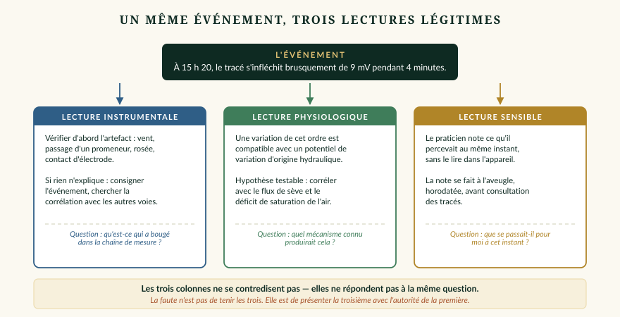
Le protocole du chapitre 25 met cette figure en pratique : le praticien consigne ses perceptions à l'aveugle, horodatées, avant toute consultation des tracés. Cette précaution ne dévalorise pas le ressenti — elle le rend examinable. Un ressenti noté après consultation des données n'apprend rien à personne, pas même à celui qui l'éprouve. Un ressenti noté avant est une donnée à part entière.
Il y a une liberté réelle à découvrir dans cette séparation, et elle surprend souvent ceux qui la pratiquent pour la première fois. Tant que votre expérience devant un arbre a besoin d'être confirmée par un appareil, elle est en position de faiblesse : elle dépend d'un verdict extérieur qui peut tomber dans l'autre sens.
Dès lors que vous acceptez qu'elle relève d'un autre registre — qu'elle ne demande ni ne craint la validation instrumentale —, elle devient inattaquable. Non parce qu'elle serait au-dessus de la critique, mais parce qu'elle ne prétend plus à ce dont on pourrait la démentir.
C'est, paradoxalement, la rigueur qui protège l'expérience intérieure. Et c'est la confusion des registres qui l'expose.
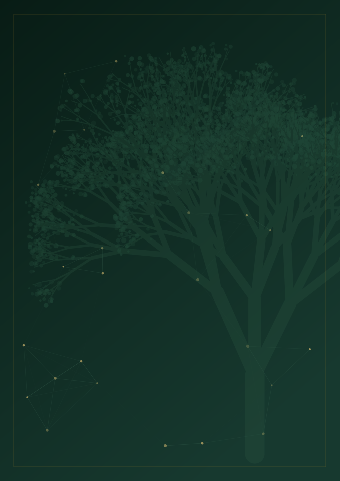
Distinguons trois questions que l'on confond systématiquement : reproduire à l'identique, reproduire le résultat, et reproduire l'effet. Les réponses sont différentes.
« Reproductible » est un mot qui recouvre au moins trois exigences distinctes, de difficulté très inégale. Les séparer permet de répondre précisément plutôt que d'osciller entre « c'est impossible » et « c'est facile ».
| Niveau | Ce qu'il exige | Verdict |
|---|---|---|
| 1. Réplication exacte refaire ce dispositif | Références de capteurs, schémas, code, invite, modèle, réglages | Impossible. Rien n'a été publié. |
| 2. Réplication fonctionnelle refaire un dispositif équivalent | Des capteurs comparables, une chaîne vocale locale, un modèle de langage | Faisable. Entièrement en logiciel libre. C'est l'objet du volume III. |
| 3. Réplication de l'effet produire la même émotion | Un lieu, un arbre remarquable, une scénographie, un tournage | Faisable, mais ce n'est pas de la technique. C'est de la mise en scène. |
| Poste | Ouvert ? | Substitut disponible |
|---|---|---|
| Capteurs environnementaux | — | Sans objet : composants du commerce, documentés par leurs fiches techniques constructeur |
| Chaîne bioélectrique | ✗ | Montages publiés dans la littérature scientifique (Hao 2021, Gibert 2006, Tran 2019) |
| Firmware du nœud | ✗ | Plusieurs projets libres couvrent ce besoin de bout en bout |
| Collecte et stockage | ✗ | Entièrement libre : courtier de messages, base de séries temporelles, tableaux de bord |
| Reconnaissance vocale | ✗ | Modèles libres exécutables localement |
| Modèle de langage | ✗ (annoncé libre, jamais nommé) | Nombreux modèles libres de taille adaptée à une machine de bureau |
| Synthèse vocale | ✗ | Moteurs libres de qualité, avec voix françaises |
| Invite système | ✗ | À réécrire — et c'est une bonne nouvelle (chapitre 24) |
| Données collectées | ✗ | Aucun substitut. Il faudra produire les siennes. |
La question n'est pas « comment obtenir ce que Droga5 n'a pas publié ? » — on ne l'obtiendra pas. La question est : « de quoi ai-je réellement besoin ? »
Et la réponse est libératrice. Vous n'avez pas besoin de leur code. Vous avez besoin d'un arbre, de quelques capteurs, d'une chaîne d'acquisition propre, d'un modèle de langage local et — surtout — d'une méthodologie qu'eux n'avaient pas. Sur ce dernier point, vous partez avec une avance.
Trois niveaux d'ambition, trois budgets, trois listes de courses. Le facteur limitant n'est jamais l'argent : c'est le temps d'étalonnage.
Voici trois configurations, de la démonstration de table à l'installation permanente. Les ordres de grandeur budgétaires sont donnés à titre indicatif pour l'Europe en 2026 ; ils varient avec les approvisionnements et ne comptent ni l'outillage ni le temps.
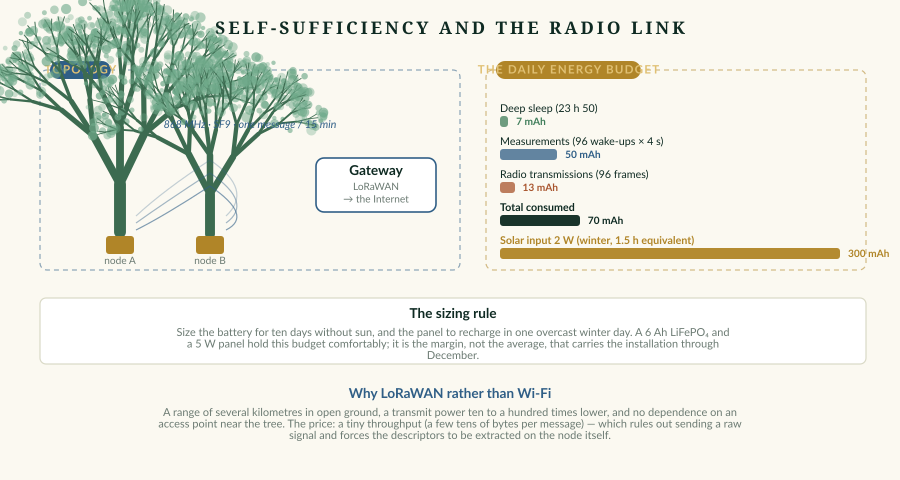
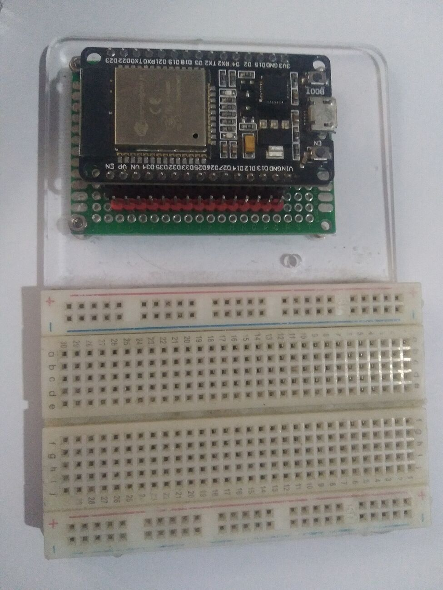
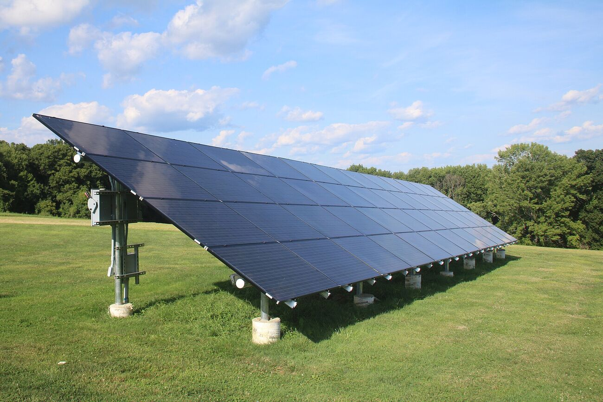
Dans toutes les configurations, le coût dominant n'est pas le matériel : c'est le temps d'étalonnage et de déverminage. Un praticien expérimenté compte, pour une installation extérieure, environ une heure de mise au point par capteur et par semaine du premier mois.
Si votre planning ne prévoit pas ce temps, votre installation produira des données. Elles seront simplement fausses, et vous ne le saurez pas.
Sept obstacles se dressent entre l'intention et la donnée fiable. Aucun n'est rédhibitoire ; tous sont sous-estimés. Les connaître à l'avance transforme un échec en résultat.
Le tissu végétal et son interface avec l'électrode présentent une impédance de l'ordre du mégaohm à la dizaine de mégaohms. Un amplificateur ordinaire charge cette source et modifie ce qu'il mesure. Il faut une impédance d'entrée très supérieure — plusieurs gigaohms — ce qui implique un amplificateur d'instrumentation et non un montage improvisé.
C'est l'obstacle numéro un en pratique. Une électrode métallique nue en contact avec un tissu humide se polarise : une tension parasite apparaît et dérive sur des heures, puis sur des jours. Sur une saison, cette dérive dépasse largement toute variation physiologique. Remède : électrodes impolarisables, mesure différentielle entre deux paires, et acceptation du fait que seules les variations rapides sont exploitables, jamais le niveau absolu.
Hors cage de Faraday, un montage haute impédance capte tout : le réseau électrique à 50 Hz, les lampadaires, les émetteurs radio, et le corps des passants. Remèdes cumulatifs : câbles blindés, longueur minimale avant amplification, filtre coupe-bande, masse propre, et — le plus efficace — échantillonnage synchrone sur un multiple entier de la période du réseau.
La difficulté la plus profonde, et la moins technique. Une variation électrique corrélée à la transpiration n'est pas un message : c'est un potentiel d'écoulement. Une variation corrélée à la température n'est pas une réaction : c'est une dérive de gain. Sans voies de contexte, ces distinctions sont impossibles à faire. C'est pourquoi la règle des voies parallèles du chapitre 11 n'est pas un conseil mais une condition.
Une mesure toutes les quinze minutes ne peut pas représenter un phénomène de période inférieure à trente minutes. Pire : elle le replie dans la bande utile sous forme d'une oscillation lente parfaitement crédible. Beaucoup de « rythmes » découverts dans des séries végétales sont des artefacts de repliement d'un parasite plus rapide. Remède : filtre anti-repliement analogique avant le convertisseur, et non filtrage numérique après.
Sur six mois, tout dérive : le gain, la référence de tension, les électrodes, l'étalonnage des sondes de sol. Une série longue sans réétalonnage périodique ne permet aucune comparaison entre son début et sa fin. Remède : une voie de référence — une résistance étalon, une sonde dans un milieu stable — enregistrée en permanence sur le même convertisseur.
Le plus prosaïque, et la première cause d'échec réelle. L'eau entre partout. Les rongeurs coupent les câbles. Le vent arrache. Le gel fissure les boîtiers. Le soleil détruit les plastiques en deux étés. Un arbre grossit et étrangle ce qu'on lui a sanglé.
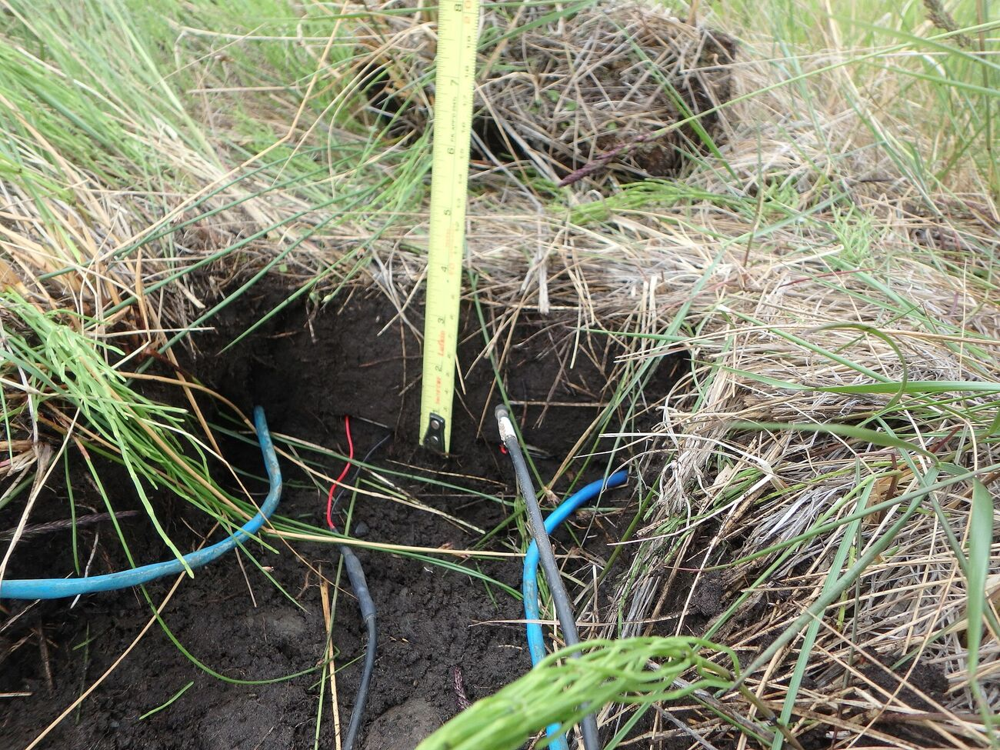
Classés par fréquence de défaillance constatée, du plus au moins courant : (1) l'étanchéité, (2) l'alimentation en hiver, (3) la dérive d'électrode, (4) le couplage 50 Hz, puis seulement ensuite les questions de traitement du signal.
Autrement dit : les échecs de ce domaine sont d'abord des échecs de plomberie, pas d'électronique ni d'algorithmique. C'est décevant et c'est ainsi. Prévoyez vos efforts en conséquence.
Supposons tous ces obstacles surmontés : des électrodes stables, un signal propre, des voies de contexte complètes, six mois de données irréprochables. Vous n'aurez toujours pas un arbre qui parle.
Vous aurez une excellente série temporelle d'électrophysiologie végétale — ce qui est un résultat réel, publiable, et plus rare qu'on ne le croit. La transformation de cette série en langage restera une opération que vous décidez, avec les règles que vous écrivez. Aucune amélioration de la mesure ne franchira cet écart, parce que ce n'est pas un écart de qualité : c'est un changement de nature.
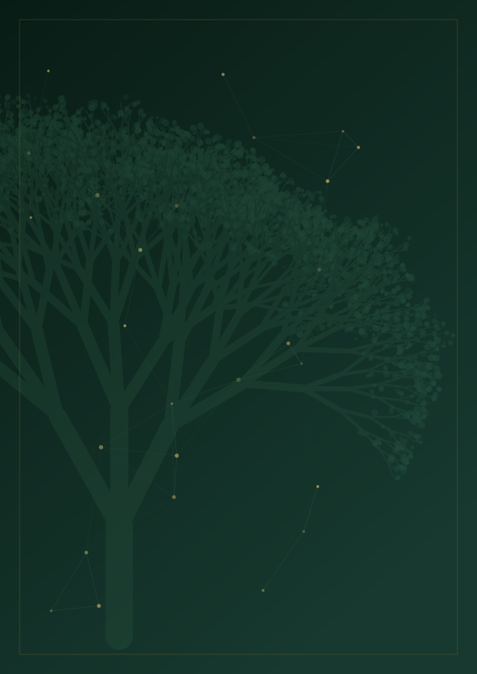
Une version condensée et honnête du dispositif, montable en un week-end. Le volume III en donne le montage complet ; ce chapitre en donne la structure et les règles.
L'objectif n'est pas de reproduire une installation de campagne, mais de disposer d'un dispositif que l'on comprend entièrement — condition sans laquelle aucun des tests du chapitre 16 n'a de sens.
L'arbre est un être vivant de plusieurs siècles, pas un support de montage. Toute mesure qui réduit son espérance de vie est une mesure ratée, quelle que soit la qualité du signal obtenue. En cas de doute : capteur non invasif, ou pas de capteur.
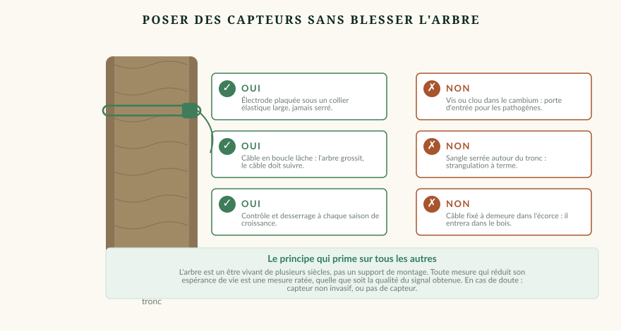
| Interdit | Pourquoi | À faire à la place |
|---|---|---|
| Visser ou clouer dans le tronc | Perfore le cambium, ouvre une voie d'infection fongique | Collier élastique large, jamais serré |
| Sangler serré autour du tronc | Strangulation à mesure que l'arbre grossit | Collier avec ressort ou boucle de dilatation, contrôlé chaque saison |
| Fixer un câble à demeure dans l'écorce | Il sera incorporé dans le bois en quelques années | Cheminement libre, boucle lâche aux deux extrémités |
| Compacter le sol au pied | Asphyxie racinaire — cause majeure de dépérissement des arbres urbains | Délimiter et respecter la zone racinaire, ne jamais y circuler |
| Décaper l'écorce pour améliorer le contact | Blessure ouverte permanente | Contact sur écorce intacte, avec gel conducteur si nécessaire |
Ajoutons une évidence trop souvent oubliée : si l'arbre n'est pas chez vous, il faut une autorisation écrite du propriétaire ou du gestionnaire. Pour un arbre communal, cela passe par le service des espaces verts, qui vous demandera en général un descriptif du dispositif, une attestation d'assurance et un engagement de remise en état.
┌──────────────┐ ┌──────────────┐ ┌──────────────┐
│ 1. CAPTEURS │──▶│ 2. NŒUD │──▶│ 3. BASE │
│ │ │ │ │ │
│ T° air, HR │ │ lecture │ │ série │
│ θ sol, T°sol │ │ horodatage │ │ temporelle │
│ lumière │ │ envoi │ │ + étiquettes │
│ (bioélec.) │ │ │ │ │
└──────────────┘ └──────────────┘ └──────┬───────┘
│
┌─────────────────────────────────┘
▼
┌──────────────────────┐ ┌───────────────────────────┐
│ 4. DESCRIPTEURS │──▶│ 5. RESTITUTION │
│ │ │ │
│ valeur courante │ │ ▸ voie A : sonification │
│ tendance sur 3 h │ │ règle publiée, testable │
│ écart au seuil │ │ ▸ voie B : texte contraint│
│ écart à la saison │ │ chaque phrase ↔ un chiffre│
└──────────────────────┘ └───────────────────────────┘
RÈGLE D'OR DU BLOC 5
Toute phrase produite doit pouvoir être reliée à un nombre mesuré.
Ce qui ne l'est pas est de la décoration — et doit être annoncé comme tel.
Voici le point où un praticien peut faire mieux que la campagne de 2025, sans matériel supplémentaire, en une heure de travail. Il suffit de contraindre.
RÔLE
Tu décris l'état d'un arbre à partir de relevés de capteurs.
Tu parles à la première personne, sobrement, sans lyrisme.
DONNÉES DU MOMENT (horodatées, seule source autorisée)
température de l'air : 14,2 °C (−1,8 °C en 3 h)
humidité relative : 81 % (+6 pts en 3 h)
humidité du sol : 0,19 m³/m³ (seuil bas de la station : 0,22)
lumière : 340 µmol·m⁻²·s⁻¹
vent : 18 km/h
CONTRAINTES (impératives)
1. Trois phrases au maximum.
2. Ne mentionne QUE les grandeurs listées ci-dessus.
3. Cite le chiffre chaque fois que tu évoques une grandeur.
4. N'exprime AUCUNE émotion, aucun souvenir, aucun désir.
5. Si une donnée manque, dis « je n'ai pas cette mesure »
au lieu de combler.
6. N'invente aucun voisinage, aucune histoire, aucun passé.
SORTIE ATTENDUE
Un constat, pas une confidence.
Comparez la sortie d'une telle invite — « Le sol autour de mes racines est à 0,19, sous le seuil bas de 0,22. L'air a perdu 1,8 degré en trois heures et l'humidité a monté de six points. » — avec la phrase originale du dispositif de Dublin. La seconde est infiniment plus belle. La première est vérifiable mot à mot.
Vous perdrez en beauté ce que vous gagnerez en honnêteté. C'est un arbitrage réel, et ce livre ne prétend pas qu'il est indolore.
Mais il existe une troisième voie, et elle est la plus intéressante : garder les deux, en les séparant explicitement. Faites énoncer le constat contraint par une voix, puis — si vous le souhaitez — proposez une évocation libre, annoncée comme telle, avec une autre voix. Le public entendra les deux et saura laquelle est quoi. Personne n'est trompé, et rien n'est perdu.
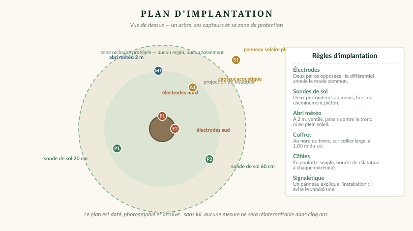
Un même arbre, une même heure, sept fois. Le protocole qui suit est conçu pour être mené seul, sans matériel coûteux — et pour pouvoir vous détromper.
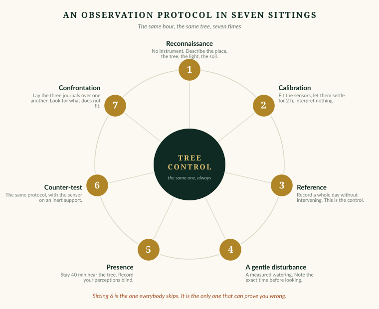
Aucun appareil. Décrivez par écrit : l'espèce, le port, l'état sanitaire apparent, l'exposition, le sol, le voisinage, la fréquentation humaine, les bruits. Photographiez sous quatre angles. Cette séance semble inutile ; elle sera la plus consultée dans deux ans.
Posez les capteurs. Laissez-les stabiliser deux heures au minimum avant de considérer une seule valeur. N'interprétez rien : cette séance ne produit pas de donnée, elle produit une installation.
Enregistrez une journée entière sans intervenir. C'est votre témoin. Toute observation ultérieure sera comparée à cette journée-là. Sans elle, vous n'avez aucun moyen de savoir ce qui est « normal » pour cet arbre.
À consigner systématiquement : date, heure, météo, ce que vous avez fait, ce que vous avez remarqué — et ce que vous attendiez. Cette dernière colonne est celle qui vous apprendra le plus sur vous-même.
Arrosez de façon mesurée — un volume connu, à une heure notée. Notez l'heure exacte avant de regarder les tracés. Puis observez si, et avec quel retard, l'humidité du sol puis les autres voies répondent.
C'est la séance la plus satisfaisante : la réponse est généralement nette, et elle vous apprend les constantes de temps de votre arbre. Un sol argileux répond en heures, un sol sableux en minutes.
Restez quarante minutes auprès de l'arbre, sans rien faire de particulier. Consignez, à l'aveugle et horodaté, ce que vous percevez — sensations, images, pensées, changements d'état. Ne consultez aucun tracé avant d'avoir terminé et daté votre note.
Cette règle est la plus difficile à tenir et la plus importante. Une note rédigée après consultation des données n'apprend rien à personne, pas même à vous. Une note rédigée avant est une donnée à part entière, comparable et examinable.
Même protocole que la séance 5, mais avec le capteur bioélectrique posé sur un support inerte — une bûche morte, une bouteille d'eau, une résistance. Tout le reste identique : même heure, même durée, même façon de consigner.
C'est la séance que tout le monde saute, et c'est la seule qui puisse vous détromper. Si vos perceptions corrèlent aussi bien avec le tracé de la bouteille qu'avec celui de l'arbre, vous avez appris quelque chose d'important — et de bien plus intéressant que la confirmation que vous cherchiez.
Superposez les trois journaux : le journal instrumental, le journal physiologique, le journal sensible. Cherchez explicitement ce qui ne colle pas.
La question à se poser. Non pas « qu'est-ce qui concorde ? » — on trouve toujours des concordances dans des séries longues — mais « qu'est-ce qui aurait dû concorder et ne concorde pas ? ». Les discordances sont informatives ; les concordances, rarement.
Il ne donnera probablement pas de preuve. Il donnera quelque chose de plus rare : une relation documentée avec un arbre précis, sur une durée, avec des traces datées que vous pourrez relire dans dix ans.
Et il vous donnera une compétence que presque personne ne possède dans ce domaine : celle de savoir, devant un tracé, ce que vous avez le droit d'en dire. C'est peu spectaculaire. C'est ce qui sépare un praticien d'un amateur d'anecdotes.
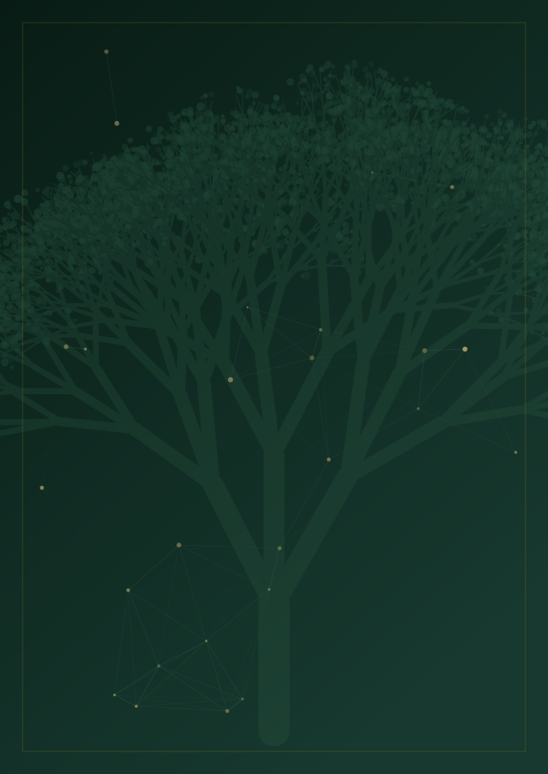
Trois affaires récentes montrent comment la science traite les affirmations spectaculaires dans ce domaine. Elles constituent le meilleur manuel de méthode disponible — et aucune des trois n'a circulé autant que ce qu'elle corrigeait.
Peu d'images scientifiques ont autant marqué le grand public que celle du réseau mycorhizien : des arbres reliés sous terre par un maillage fongique, échangeant carbone, nutriments et signaux d'alerte, les « arbres-mères » nourrissant préférentiellement leur descendance.
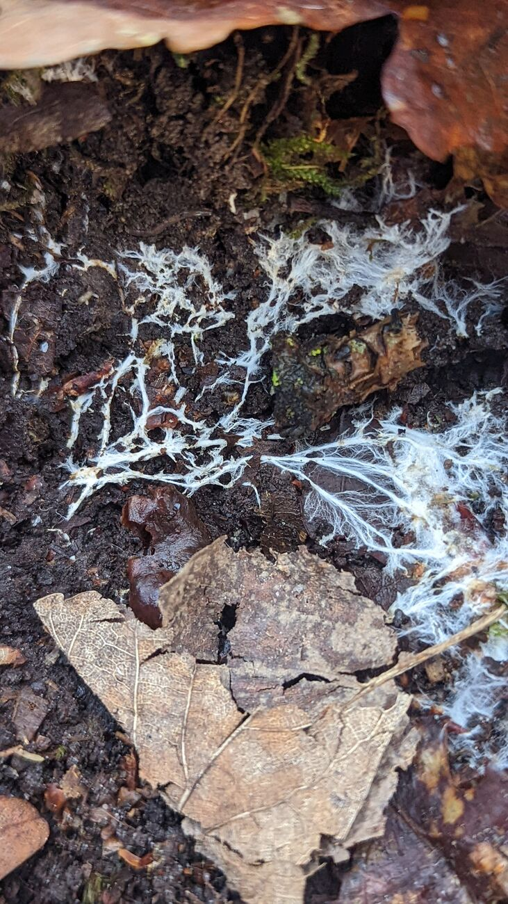
Simard, Perry, Jones, Myrold, Durall & Molina (1997), Nature 388, p. 579-582, ont montré un transfert net de carbone entre espèces d'arbres ectomycorhiziens sur le terrain. C'est le travail fondateur.
Klein, Siegwolf & Körner (2016), Science 352(6283), p. 342-344, ont marqué à l'isotope ¹³C la canopée d'épicéas de 40 mètres et mesuré un transfert interspécifique bidirectionnel vers hêtre, mélèze et pin. Le flux représente 40 % du carbone des racines fines, soit environ 280 kg par hectare et par an d'échange entre arbres.
Kiers et al. (2011), Science 333(6044), p. 880-882, ont montré que plantes et champignons se récompensent mutuellement : la plante alloue plus de glucides aux meilleurs partenaires fongiques, et le champignon plus de nutriments aux racines les plus généreuses. À noter : c'est un mécanisme de marché biologique, avec contrôle bidirectionnel — pas d'altruisme.
Karst, Jones & Hoeksema (2023), « Positive citation bias and overinterpreted results lead to misinformation on common mycorrhizal networks in forests », Nature Ecology & Evolution 7(4), p. 501-511, ont évalué trois affirmations courantes. Verdicts :
| Affirmation | Verdict |
|---|---|
| Les réseaux mycorhiziens communs sont répandus dans les forêts | Insuffisamment étayé — résultats de terrain trop variables, explications alternatives, portée trop limitée pour généraliser |
| Des ressources transitent par ces réseaux et améliorent les performances des semis | Insuffisamment étayé — même motif |
| Les arbres matures envoient préférentiellement ressources et signaux de défense à leur descendance | Aucune preuve publiée et évaluée par les pairs |
La troisième ligne est la plus dure : l'affirmation la plus populaire est celle qui n'a aucun support publié. Les auteurs montrent en outre que les affirmations non étayées ont doublé en vingt-cinq ans dans la littérature, par biais de citation — et ils reconnaissent honnêtement que certaines de ces citations abusives provenaient de leurs propres publications antérieures.
Leur conclusion : « les connaissances sur les réseaux mycorhiziens communs sont actuellement trop clairsemées et trop incertaines pour éclairer la gestion forestière ».
Le débat n'est pas clos : Simard et ses coauteurs ont répondu en 2025 dans Frontiers in Forests and Global Change, arguant qu'un biais de citation n'annule pas la dépendance mycorhizienne générale des arbres ni les transferts démontrés. Position défendable et honnête à tenir : le transfert de carbone entre arbres est documenté ; sa généralité, son bénéfice net et surtout sa direction préférentielle vers la descendance ne le sont pas.
Regardez la mécanique : une métaphore journalistique — le « Wood Wide Web » — a rétroagi sur la littérature scientifique par biais de citation, jusqu'à ce que des chercheurs doivent quantifier le phénomène pour l'arrêter.
C'est exactement, à une autre échelle, ce que nous avons observé au chapitre 3 avec la transformation de « campagne londonienne » en « arbre dublinois qui parle ». La différence est qu'ici, quelqu'un a fait le travail de recomptage. Et que ce travail a infiniment moins circulé que ce qu'il corrigeait.
En 2006, un groupe de chercheurs propose un programme de recherche sous le nom de plant neurobiology : Brenner, Stahlberg, Mancuso, Vivanco, Baluška & Van Volkenburgh (2006), Trends in Plant Science 11(8), p. 413-419. L'idée : les plantes intègrent l'information environnementale via signaux électriques longue distance, transport d'auxine et molécules dites « neuronales ».
La réponse est immédiate et massive. Alpi et al. (2007), « Plant neurobiology: no brain, no gain? », Trends in Plant Science 12(4), p. 135-136, réunit trente-six signataires — dont plusieurs des plus grands noms de la physiologie végétale. Leur argument est terminologique et substantiel : le préfixe « neuro- » a toujours désigné l'appareil anatomique qui permet aux animaux de se comporter, et les plantes n'en possèdent pas ; les analogies revendiquées ne reposent sur aucune structure homologue.
Le débat se poursuit. Taiz, Alkon, Draguhn, Murphy, Blatt, Hawes, Thiel & Robinson (2019), « Plants Neither Possess nor Require Consciousness », Trends in Plant Science 24(8), p. 677-687, puis les réponses de Calvo & Trewavas (2020) et la mise au point de Mallatt et al. sur la « conscience végétale ».
Aucun des trente-six signataires d'Alpi et al. ne conteste que les plantes propagent des signaux électriques. Le désaccord ne porte pas sur les faits, il porte sur les mots. Et ce n'est pas une querelle de spécialistes : le choix du vocabulaire détermine ce que le lecteur conclura.
Dire qu'une plante « a des neurotransmetteurs » est exact et trompeur à la fois : exact parce qu'elle synthétise du glutamate, du GABA, de la sérotonine ; trompeur parce que « neurotransmetteur » désigne une fonction dans un réseau nerveux, pas une molécule en soi. Une molécule n'a pas de fonction intrinsèque : elle a celle que lui donne le réseau qui l'emploie. Une banane contient de la sérotonine ; personne n'en conclut qu'elle a une humeur.
La troisième affaire est la plus instructive, parce qu'elle montre le mécanisme correcteur en action, du début à la fin.
En 2016, une équipe publie un résultat spectaculaire : un conditionnement associatif de type pavlovien chez le pois, dans un labyrinthe en Y. Une plante apprendrait à associer un stimulus neutre à une source de lumière. L'écho médiatique est considérable.
Markel, K. (2020), « Lack of evidence for associative learning in pea plants », eLife 9:e57614. Tentative de réplication avec un effectif plus grand et une analyse entièrement en aveugle : échec de réplication.
Gagliano et al. (2020), commentaire, eLife 9:e61141 : le protocole de réplication est jugé inadapté.
Markel, K. (2020), réponse au commentaire, eLife 9:e61689 : les différences de dispositif n'expliquent pas l'échec.
Ce triptyque est le cas d'école du domaine. Il montre comment une revendication à fort retentissement médiatique se comporte sous réplication en aveugle — et il justifie une prudence générale à l'égard de l'ensemble du corpus de la même équipe, y compris les affirmations de bioacoustique racinaire souvent reprises.
L'affirmation selon laquelle « les racines de maïs émettent des clics à 220 Hz » et « répondent le mieux entre 200 et 300 Hz » circule massivement. La recherche documentaire menée pour cet ouvrage n'a pas permis de remonter à un article primaire publiant ces données avec leurs statistiques. Le chiffre apparaît dans un article d'opinion, non dans une étude originale.
Nous le traitons donc comme non établi, et nous ne le citerons pas.
Précisons également, puisque le nom circule dans la littérature de vulgarisation francophone : aucune trace d'une chercheuse nommée « Carol Gibson-Wood » travaillant en bioacoustique végétale n'a pu être trouvée dans les bases interrogées. Il s'agit très probablement d'une confusion, et nous ne reprenons pas cette référence.
Un cahier des charges, en sept points, pour qu'un « arbre parlant » cesse d'être une œuvre et devienne aussi une contribution. Aucun de ces points n'est coûteux.
Terminons par une proposition constructive. Que faudrait-il ajouter à un dispositif comme celui de 2025 pour qu'il produise, en plus de son effet, quelque chose que d'autres puissent utiliser ? La liste est courte, et rien n'y est hors de portée d'une équipe qui a déjà su monter l'installation.
Toutes les voies, horodatées, en accès libre, avec une licence claire. C'est la contribution la plus durable qu'un tel projet puisse laisser : dans dix ans, l'installation aura disparu, mais une série temporelle multivoie sur un platane bicentenaire en milieu urbain restera intéressante.
Sans quoi personne ne peut évaluer la part du texte qui vient des données. C'est l'équivalent, pour ce type de dispositif, de la publication d'une méthode.
L'épreuve du vide, l'ablation, le pré-enregistrement (chapitre 16). Avec leurs résultats, même défavorables. C'est précisément un résultat défavorable publié qui établirait la crédibilité de tout le reste.
Étalons employés, dérive constatée, fréquence de réétalonnage. Sans cela, les valeurs n'ont pas d'incertitude connue, et une valeur sans incertitude n'est pas une mesure.
La règle des voies parallèles (chapitre 11). Sans elles, aucune variation bioélectrique n'est interprétable.
Un écran, à côté du dispositif, montrant en direct les valeurs qui alimentent l'invite. Coût dérisoire, effet considérable : le visiteur voit ce qui vient de l'arbre, et la phrase qu'il entend cesse d'être un oracle pour devenir une lecture.
Un panneau, en une phrase honnête : « Les capteurs mesurent l'état de cet arbre. Un programme d'intelligence artificielle met ces mesures en phrases. Les mots sont ceux du programme ; les chiffres sont ceux de l'arbre. » Vingt-huit mots. Ils ne diminuent pas l'émotion — ils la rendent défendable.
« Tout cela va casser la magie. »
C'est l'objection qu'on entend toujours, et elle mérite une réponse plutôt qu'un haussement d'épaules. Voici la réponse : l'émerveillement qui a besoin d'ignorance est fragile. Il tient jusqu'à la première explication, puis il se retourne en sentiment d'avoir été joué — et ce retournement est bien plus destructeur que la franchise initiale.
L'émerveillement qui résiste à l'explication est d'une autre nature, et il est disponible ici en abondance. Qu'un arbre de deux cents ans maintienne une colonne d'eau sous tension négative à trente mètres de hauteur, qu'il émette des ultrasons quand cette colonne casse, qu'il propage un signal calcique quand on le blesse, qu'il ait traversé deux siècles à l'endroit exact où vous êtes assis — tout cela est vrai, vérifiable, et plus étonnant que n'importe quelle phrase générée.
Le dispositif honnête ne supprime pas le merveilleux. Il le déplace de la machine vers l'arbre. C'est le déplacement que ce livre aura cherché à opérer.
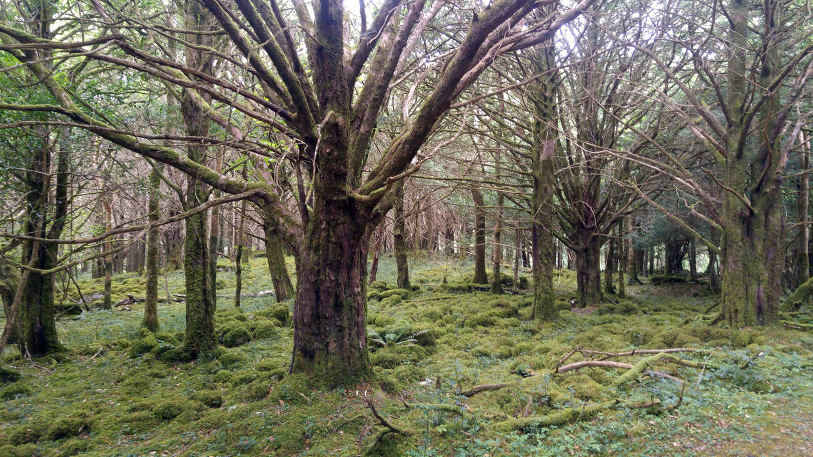
Retournez voir l'arbre du chapitre d'introduction, celui que vous aviez en tête. Il n'a rien dit pendant que vous lisiez ces pages. Il a transpiré quelques dizaines de litres, contracté puis regonflé son tronc de quelques dizaines de micromètres, remonté de l'eau sous tension, échangé du carbone avec des champignons dont nous ne savons pas encore bien ce qu'ils en font, et propagé çà et là des signaux électriques dont nous connaissons le mécanisme mais pas la portée.
Il ne vous a pas parlé. C'est nous qui n'avons pas encore appris à regarder ce qu'il fait.
81 entrées. Chaque terme est donné avec sa définition, son contexte d'emploi dans cet ouvrage et, lorsqu'il y a lieu, l'écueil qu'il faut éviter — car dans ce domaine, la plupart des erreurs sont des erreurs de vocabulaire.
Toutes les références ci-dessous ont été consultées ou vérifiées lors de la préparation de cet ouvrage, en septembre 2026. Les points qui n'ont pas pu être vérifiés sont signalés comme tels — c'est une information, non un aveu.
Les « clics à 220 Hz » des racines de maïs : le chiffre apparaît dans un article d'opinion, non dans une étude originale publiant données et statistiques. Traité comme non établi.
« Carol Gibson-Wood », parfois citée comme chercheuse en bioacoustique végétale : aucune trace dans les bases interrogées. Probable confusion — référence écartée.
Signalons également qu'un article de 2024 intitulé « The plant is neither dumb nor deaf; it talks and hears » (The Plant Journal) a été rétracté et ne doit pas être cité.
La préparation de ces trois volumes s'est accompagnée de la constitution d'un fonds de 76 documents — articles en accès ouvert, œuvres du domaine public, fiches techniques de composants, dépôts de code sous licence libre et archives de presse — pour un volume d'environ 360 Mo. Ce fonds est organisé et indexé dans le répertoire sources/ du projet, avec pour chaque pièce sa référence complète, son identifiant pérenne et son thème. Les documents sous accès restreint n'ont pas été téléchargés : seules leurs références et leurs identifiants figurent à l'index.
91 entrées, renvoyant aux pages où la notion est traitée — et non à chaque occurrence du mot. Les numéros de page sont calculés à l'impression.
Les 22 photographies de ce volume proviennent toutes de Wikimedia Commons et sont sous licence libre : domaine public, CC0, CC BY ou CC BY-SA. Les schémas, diagrammes et illustrations vectorielles sont des créations originales réalisées pour cette série.
Pour toute réutilisation d'une de ces photographies, mentionner au minimum le titre, l'auteur et la licence, tels qu'ils figurent ci-dessous. Les images sous licence CC BY-SA imposent en outre le partage de l'œuvre dérivée dans les mêmes conditions, lorsque celle-ci constitue une adaptation de l'image. Les images en domaine public ou CC0 n'imposent pas d'attribution ; la mention est conservée ici par honnêteté intellectuelle.
| Fichier | Titre | Auteur | Licence |
|---|---|---|---|
| anatomie-cernes-croissance-01 | Close-up of Tree Cross-section Showing Growth Rings https://commons.wikimedia.org/wiki/File:Close-up_of_Tree_Cross-section_Showing_Growth_Rings.jpg | Kelsey Todd | CC BY-SA 4.0 |
| anatomie-stomates-microscope-06 | Stomata of Tradescantia spathacea leaves https://commons.wikimedia.org/wiki/File:Stomata_of_Tradescantia_spathacea_leaves.jpg | Trương Minh Khải | CC BY 4.0 |
| anatomie-xyleme-phloeme-04 | Rose stalk tissues https://commons.wikimedia.org/wiki/File:Rose_stalk_tissues.jpg | Misiek1962 | CC BY 4.0 |
| arbre-chene-remarquable-01 | 2015 Major Oak UKE https://commons.wikimedia.org/wiki/File:2015_Major_Oak_UKE.jpg | Ema Lee | CC BY-SA 4.0 |
| arbre-chene-tronc-ancien-02 | The trunk of an ancient oak, Quercus robur - geograph.org.uk - 7022769 https://commons.wikimedia.org/wiki/File:The_trunk_of_an_ancient_oak,_Quercus_robur_-_geograph.org.uk_-_7022769.jpg | Bob Harvey | CC BY-SA 2.0 |
| arbre-dublin-stephens-green-09 | St Stephen's Green, Dublin 2, Ireland (Unsplash) https://commons.wikimedia.org/wiki/File:St_Stephen%27s_Green,_Dublin_2,_Ireland_%28Unsplash%29.jpg | Katherine McCormack kathymacky | CC0 1.0 (domaine public volontaire) |
| champignon-mycelium-reseau-02 | The root-like Mycelium of a fungus https://commons.wikimedia.org/wiki/File:The_root-like_Mycelium_of_a_fungus.jpg | FungiFriendly | CC BY-SA 4.0 |
| electronique-abri-stevenson-10 | Stevenson screen for South Shields Weather Station - geograph.org.uk - 2937031 https://commons.wikimedia.org/wiki/File:Stevenson_screen_for_South_Shields_Weather_Station_-_geograph.org.uk_-_2937031.jpg | peter robinson | CC BY-SA 2.0 |
| electronique-capteurs-sol-terrain-16 | Installation of soil sensors https://commons.wikimedia.org/wiki/File:Installation_of_soil_sensors.jpg | UBC Micrometeorology from Vancouver, Canada | CC BY 2.0 |
| electronique-esp32-carte-01 | ESP32 Dev Board https://commons.wikimedia.org/wiki/File:ESP32_Dev_Board.jpg | Edwiyanto | CC BY-SA 4.0 |
| electronique-oscilloscope-08 | Digital Oscilloscope https://commons.wikimedia.org/wiki/File:Digital_Oscilloscope.jpg | Mikasa2025 | CC BY 4.0 |
| electronique-panneau-solaire-12 | Ground mounted solar panels.gk https://commons.wikimedia.org/wiki/File:Ground_mounted_solar_panels.gk.jpg | Grendelkhan | CC BY-SA 4.0 |
| foret-killarney-ifs-irlande-07 | Yews at Reenadinna Wood, Killarney National Park https://commons.wikimedia.org/wiki/File:Yews_at_Reenadinna_Wood,_Killarney_National_Park_-_geograph.org.uk_-_5646207.jpg | Phil Champion | CC BY-SA 2.0 |
| histoire-bose-crescographe-03 | Crescograph - Jagadish Chandra Bose Museum - Bose Institute - Kolkata 2011-07-26 4040 Cropped https://commons.wikimedia.org/wiki/File:Crescograph_-_Jagadish_Chandra_Bose_Museum_-_Bose_Institute_-_Kolkata_2011-07-26_4040_Cropped.JPG | Biswarup Ganguly | CC BY 3.0 |
| histoire-bose-portrait-01 | 1920 Jagadish Chandra Bose https://commons.wikimedia.org/wiki/File:1920_Jagadish_Chandra_Bose.jpg | Georges Chevalier | CC BY-SA 4.0 |
| histoire-dionaea-poils-sensitifs-09 | Venus Flytrap showing trigger hairs https://commons.wikimedia.org/wiki/File:Venus_Flytrap_showing_trigger_hairs.jpg | Noah Elhardt | CC BY-SA 2.5 |
| histoire-mimosa-pudica-12 | Mimosa pudica 2 https://commons.wikimedia.org/wiki/File:Mimosa_pudica_2.jpg | Eric Hunt | CC BY-SA 4.0 |
| symbolique-broceliande-chene-06 | Old oak britany 2009 https://commons.wikimedia.org/wiki/File:Old_oak_britany_2009.jpg | Kilobug | CC BY-SA 3.0 |
| symbolique-druide-gravure-11 | The chief Druid, engraving https://commons.wikimedia.org/wiki/File:The_chief_Druid,_engraving.jpg | Thomas Pennant | Domaine public |
| symbolique-if-millenaire-13 | Ancient Taxus baccata in Fonte Avellana - CO2v01-22337742 https://commons.wikimedia.org/wiki/File:Ancient_Taxus_baccata_in_Fonte_Avellana_-_CO2v01-22337742.jpg | CosyCobra | CC BY-SA 4.0 |
| symbolique-ogham-alphabet-01 | Ogham-1013841, Dingle Peninsula, Co. Kerry, Ireland https://commons.wikimedia.org/wiki/File:Ogham-1013841,_Dingle_Peninsula,_Co._Kerry,_Ireland.jpg | Mucklagh | CC BY-SA 4.0 |
| symbolique-ogham-pierre-04 | Churchclara Church ogham stone https://commons.wikimedia.org/wiki/File:Churchclara_Church_ogham_stone.jpg | A.-K. D. | CC BY-SA 4.0 |
L'ensemble des schémas, diagrammes, frises, plans et fonds de partie de cette série est généré de façon déterministe par un programme écrit pour l'occasion. Ils sont donc reproductibles à l'identique et librement réutilisables, comme le texte de l'ouvrage.
L'ARBRE QUI PARLE
Anatomie d'un arbre connecté
Volume I de la série « L'Arbre qui Parle »
II. Biocommunication végétale et intelligence artificielle
III. Créer un arbre parlant — manuel d'atelier
Ateliers BN
bretagne-namaste.com
Composé en Cinzel (titres), Cormorant Garamond (titres courants et citations) et Lato (texte courant).
Format 170 × 240 mm. Mis en pages avec WeasyPrint, d'après une feuille de style de média paginé écrite pour cette collection.
Schémas, diagrammes et fonds de partie : illustrations vectorielles originales, générées de façon déterministe — donc reproductibles à l'identique.
Photographies : fonds Wikimedia Commons sous licence libre, créditées en annexe.
Achevé le 17 septembre 2026.
« Il ne vous a pas parlé.
C'est nous qui n'avons pas encore appris
à regarder ce qu'il fait. »
Ebook librement diffusable sans aucune condition.